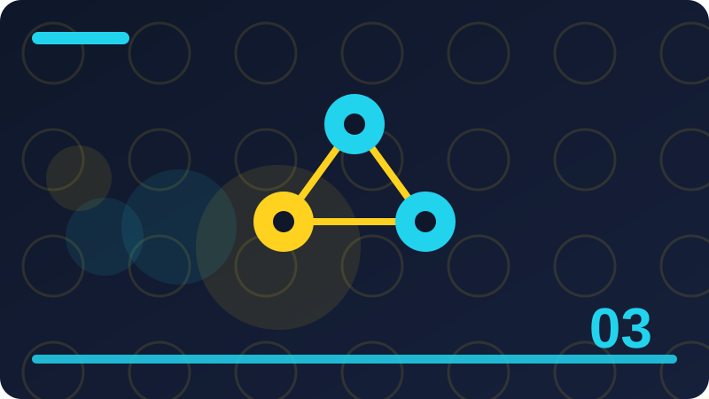

Chapter 3: Data: The Fuel of AI in Plain Words

Section 1: What Data Really Is
Data is a record of something that happened, was observed, or was written down, stored in a form a computer can process. A list of your daily tasks is data. A collection of messages with labels is data. A table of temperatures, a set of photographs, and a folder of notes are all data. The word sounds technical, but the idea is ordinary: data is information kept in an organised form so it can be counted, searched, sorted, and learned from. Without data, a program has nothing to work on, just as a cook without ingredients has nothing to cook, however good her recipes may be. That is why this chapter calls data the fuel of AI: it powers everything else, and its quality determines the quality of the result.
Data comes in many forms, and recognising the form matters because different forms need different handling. Structured data is organised into rows and columns, like a spreadsheet, where each row is one item and each column is one property of that item. Unstructured data has no neat table shape: free text, images, audio, and video are unstructured, because their meaning is not divided into labelled columns. Semi-structured data sits between: a web page, for example, has some structure, like headings and links, but its main content is free text. Most AI work involves turning unstructured data into structured features, such as word counts, so that patterns can be found. That transformation, from raw material to usable features, is a large part of practical AI work, and it deserves as much attention as modelling.
Data also has a source, and the source shapes what the data can honestly tell you. Data collected from one shop tells you about that shop, not about all shops. Data written by one person tells you about that person's language, not about language in general. Data collected at one time tells you about that time, not about all times. Those limits are not flaws to be embarrassed about; they are facts to be stated, so users know how far a conclusion can travel. A conclusion drawn from narrow data and presented as universal is a common AI error, and it is avoided by describing the source plainly and by testing on data from other sources before generalising.
Finally, data is not neutral. It reflects the choices of the people who collected it: what to record, what to ignore, how to label it, and whom to include. Those choices embed values, priorities, and sometimes biases, whether intended or not. A dataset of hiring decisions reflects past hiring practices, including any unfairness in them. A dataset of language reflects the dialects of its writers, not all dialects equally. Recognising that data carries history is the first step to using it responsibly, and it is a theme this chapter will return to repeatedly, because responsible data work is responsible AI work.
Check: Give an example of structured data and an example of unstructured data from your own life, and explain the difference.
Section 2: Rows, Columns and Records
The simplest way to organise data is a table. Each row, also called a record, describes one thing: one message, one customer, one day, one task. Each column, also called a field or an attribute, describes one property of those things: the message text, the sender, the date, or the label. That grid, rows for items and columns for properties, is the foundation of spreadsheets, databases, and most data files you will meet. It is simple, but it is powerful, because it lets a program compare items, count properties, and find patterns across many rows at once, using the same operations for any table.
Consider a tiny table of messages. The columns might be message text, sender, date, and label. The first row might be "Buy milk tomorrow", from you, dated today, labelled task. The second row might be a question about a meeting, labelled question. With that table, a program can count how many tasks there are, find all messages from a particular sender, or learn which words appear most often with each label. Those operations are the building blocks of learning, and they all depend on the table being organised consistently: the same columns, in the same order, with the same kind of value in each column, for every row. Inconsistency, such as a date written in two different formats, breaks those operations and must be cleaned before learning can begin.
Tables also make missing data visible. If a row lacks a sender, that cell is empty, and the program must decide what to do: ignore the row, fill in a default, or treat missingness itself as information. Sometimes missingness is informative: a message without a sender might be a system notification, not a personal message. Sometimes it is just an error in collection. Distinguishing those cases requires looking at the data and understanding its source, not just applying a default rule blindly. That judgement, applied cell by cell and column by column, is the unglamorous heart of data work, and it is where many projects succeed or fail quietly.
Tables have limits too. Not all data fits neatly into rows and columns. A long document, a photograph, or a conversation has structure that a flat table flattens and loses. For such data, builders use other organisations: lists of features, trees, graphs, or sequences, each preserving a different kind of structure. Choosing an organisation is a design decision: what structure matters for the job, and what can safely be flattened? A message classifier can flatten a message into word counts and still work well, because word counts capture much of what matters for sorting. A summariser cannot flatten a document so aggressively, because sentence order and structure matter for meaning. Match the organisation to the job.
As you build datasets in this book, start with tables. They are easy to create, easy to inspect, and easy to share as simple text files. When a job outgrows tables, you will know, because important information will keep getting lost, and that loss will show up as mistakes in testing. Let testing tell you when to move beyond tables, rather than starting with a complex organisation you do not yet need.
Check: Design a small table for tracking your daily tasks, naming its columns and giving two example rows.
Section 3: Text as Data
Text is the most common kind of data in this book, and it is also one of the trickiest, because its structure is implicit. A sentence carries meaning through word choice, word order, punctuation, and context, none of which is labelled explicitly. To use text as data, a program must first turn it into features it can count: words, word pairs, sentence lengths, or punctuation marks. That transformation, called feature extraction, is where much of the art of text AI lives, because different features capture different aspects of meaning, and the choice of features shapes what patterns a program can find. A classifier using only word counts will miss word order; one using word order will need more data to learn reliably. Trade-offs like these are normal, and they are resolved by testing, not by theory alone.
Text data also needs cleaning, though cleaning must be done thoughtfully. Lower-casing makes "Buy" and "buy" match, which is usually helpful. Removing punctuation may help a classifier but harm a question detector that relies on question marks. Removing common words like "the" and "and" may reduce noise, but it may also remove clues for some jobs. There is no universally correct cleaning recipe; there is a recipe that works for a particular job, found by testing alternatives on fresh data. Beginners often clean aggressively, following a tutorial's recipe, without checking whether each step helps their own job. Resist that habit: test each cleaning step, keep what helps, and drop what does not, for your data and your task.
Another challenge with text is variation. People spell differently, abbreviate differently, and use different dialects, and a program trained on one variety will struggle with others. That is not a reason to standardise everyone's language; it is a reason to broaden training data and to test on varied language, as earlier chapters urged. It is also a reason to be careful with stemming and spelling correction, which can help by grouping variants together, but can also harm by merging words that mean different things. Every text-processing choice is a bet about what variation matters, and bets should be tested, not assumed.
Finally, text data carries privacy risks that structured numbers often do not. A message may contain names, addresses, opinions, or secrets, even when the task only needs its topic. Working with text therefore requires the privacy habits from Chapter 1: use your own or invented data for practice, minimise what you collect, and never feed other people's private text into systems you do not control. Those habits are not bureaucratic; they protect real people from real harm, and they are part of what makes a text AI builder trustworthy.
That transformation is where much of the practical skill in text AI lives, and it rewards careful testing.
Check: Why might removing punctuation help one text job but harm another? Give a concrete example of each.
Section 4: Numbers as Data
Numbers are the most straightforward kind of data for computers, because computers are built to calculate with them. A temperature, a price, a count, or a score is already in a form a program can add, average, and compare. But numbers still need care, because their meaning depends on their units, their scale, and their context. A temperature of 20 means something different in Celsius and Fahrenheit. A price of 100 means something different in different currencies. A score of 80 means something different on a test out of 100 and a test out of 200. Recording units and scales alongside numbers is therefore essential, and a dataset that omits them is incomplete, however precise its numbers look.
Numbers also vary in scale, and scale matters for learning. If one feature ranges from 0 to 1, and another ranges from 0 to 1,000,000, a learning program that adds or compares them may be dominated by the larger one, not because it matters more, but because its numbers are bigger. Builders handle this by scaling: bringing features onto a comparable range, for example by dividing by a maximum or by standardising around an average. Scaling is a technical step you will meet in later chapters, but the intuition belongs here: numbers must be comparable before they can be fairly combined, and comparability is a design choice, not an automatic property of raw numbers.
Missing and erroneous numbers are another concern. A sensor may fail and record zero instead of a real value, or a person may type 1000 instead of 100. Those errors, if treated as real data, will distort averages, patterns, and learned models. Detecting them requires looking at the data: values far outside the usual range, sudden jumps, or impossible values like a negative age are clues. How to handle them, by removing, correcting, or flagging, depends on the job and on how many are affected. A few errors can be removed safely; many errors suggest a collection problem that must be fixed at the source, not patched in the data.
Finally, numbers can mislead through precision. A measurement reported to ten decimal places may look more accurate than one reported to one place, but if the underlying instrument is only accurate to one place, the extra digits are false precision. Similarly, an average computed from three values is less reliable than one computed from three thousand, however precisely it is printed. Good data work reports not only numbers, but also their uncertainty: how they were measured, how many values contributed, and how much they vary. That honesty about numbers is the numerical version of the uncertainty reporting this book advocates for AI outputs in general.
Always record units alongside numbers, so that future readers know exactly what each value means.
Check: A dataset records temperatures but does not say whether they are Celsius or Fahrenheit. Why is that a serious problem, even if all the numbers are correct?
Section 5: Images, Audio and Other Data
Not all data is text or numbers. Images are grids of pixels, each with colour values. Audio is a wave of pressure values over time. Video combines images over time, plus audio. Sensor data is a stream of measurements from devices. Each form has its own structure, its own size, and its own challenges, but all share the same data principles: look at it, understand its source, organise it, clean it, and respect its owners. A builder who understands those principles for text and tables can transfer them to other forms, learning the form-specific details as needed, rather than starting from scratch for each new kind of data.
Images illustrate the size challenge. A single photograph may contain millions of pixels, each with several colour values, making it far larger than a text message. Working with images therefore requires efficient storage, careful sampling, and often, learned features that compress pixels into meaningful patterns, such as edges, shapes, and objects. Those features are the image equivalent of word counts for text: a reduction that preserves what matters for the job and discards the rest. Choosing that reduction well is the key skill in image AI, and it is why image systems need large datasets: they must learn, from many examples, which pixel patterns matter for which labels.
Audio illustrates the time challenge. A spoken sentence unfolds over seconds, and its meaning depends on order, rhythm, and intonation, not just on which sounds appear. Representing audio therefore requires capturing sequence, not just counts, which is harder than counting words in a message. That is why speech recognition, though much improved, still struggles with accents, noise, and overlapping speech: the signal is rich, variable, and context-dependent. Builders working with audio must test in realistic conditions, with background noise and varied speakers, not only in clean laboratory recordings, or their systems will disappoint in real use.
Other data forms bring their own privacy and ethical concerns. Images may contain faces, locations, or documents. Audio may contain voices that identify speakers. Sensor data from a home may reveal daily routines. Those concerns are stronger than for anonymous numbers, because the data itself identifies people or reveals intimate details. Handling such data requires stronger safeguards: consent, minimisation, secure storage, and deletion when no longer needed. For practice in this book, you will stick to text and numbers you create yourself, which avoids those risks while teaching the transferable principles.
Finally, remember that combining data forms can be powerful: text plus images, or numbers plus audio, often tell a richer story than either alone. But combination also multiplies complexity and risk, because each form needs its own handling, and their combination needs alignment, such as matching a caption to the right image. Start with one form, master it, and combine only when a job clearly benefits. Simplicity, again, is a virtue, especially when learning.
Check: Why does a single image need far more storage and processing than a single text message of similar meaning?
Section 6: Where Data Comes From
Data comes from many sources, and each source brings its own strengths, limits, and permissions. You can create data yourself, by writing examples, inventing messages, or recording your own measurements. Created data is clean, consented, and fully understood, but it is small and may reflect only your perspective. You can collect data from your own use, such as your notes, tasks, or files, which is realistic and personal, but must be handled privately and never shared without thought. You can use public datasets, created by others for research or teaching, which are larger and more diverse, but must be checked for quality, bias, and licence before use. And you can obtain data from organisations, with permission, which may be large and realistic, but comes with obligations about storage, use, and sharing.
Each source requires a different kind of checking. Created data should be checked for variety: does it cover the cases the tool will face, or only the cases you imagined? Collected personal data should be checked for privacy: does it contain anything you would not want shared, even accidentally? Public data should be checked for provenance: who created it, when, for what purpose, and under what licence? Organisational data should be checked for agreements: what are you allowed to do with it, for how long, and who else may access it? Those checks are not bureaucracy; they are the due diligence that prevents legal, ethical, and technical problems later, when changing data sources is expensive.
A common beginner mistake is to start with the largest available dataset, assuming bigger is better. But a large dataset from the wrong source, with the wrong labels, or with hidden biases, is worse than a small dataset from the right source, carefully labelled and understood. Size helps only when the data matches the job, and matching matters more than magnitude. A small, well-matched dataset that you understand deeply will teach you more, and produce a better tool for your job, than a huge, mismatched dataset that you never inspect. That principle, match before magnitude, should guide every data choice you make.
Another mistake is to treat data as free because it is accessible. Data scraped from websites, copied from other people's work, or collected without consent may be accessible, but it is not necessarily yours to use, and using it may violate licences, terms of service, or privacy expectations. When in doubt, ask permission, use data explicitly offered for your purpose, or create your own. Those honest routes are slightly slower, but they protect you and respect the people whose information or work the data represents. In professional life, that respect is part of your reputation as a builder.
Finally, keep a record of where each dataset came from, when you obtained it, and what you are allowed to do with it. That record, called data provenance, is invaluable when questions arise later: a user asks where a tool's knowledge came from, a collaborator wants to reuse your data, or a licence changes. Provenance is easy to record at collection time and hard to reconstruct later, so make it a habit from the start, even for toy datasets you create yourself.
Check: Why is a small dataset that matches your job better than a large dataset that does not?
Section 7: Collecting Data Well
Collecting data well starts with a plan, not with gathering. Before collecting anything, write down the job, the examples needed, and the labels or properties each example must have. For a message classifier, the plan might be: collect fifty messages, covering questions, tasks, and notes, in varied styles, each labelled by its intended type. That plan guides collection, prevents wasted effort on irrelevant examples, and makes it clear when you have enough. Without a plan, collection drifts: you gather what is easy, miss what is hard, and end up with a dataset that is large but unbalanced, which is a common and avoidable failure.
Balance matters. If your dataset has forty tasks, five questions, and five notes, a program trained on it will favour tasks, not because tasks are more important, but because they are more common in the data. That imbalance, called class imbalance, is one of the most common data problems, and it is fixed by collecting more of the underrepresented kinds, or by weighting them more heavily during learning, topics later chapters will formalise. For now, the habit is simple: count your categories as you collect, and aim for rough balance unless the real world is genuinely unbalanced and you have a reason to reflect that imbalance, stated explicitly.
Collection also needs consistency. If two people label the same message differently, the dataset contains contradictory lessons, and a program trained on it will be confused. Preventing that requires clear labelling guidelines: written definitions of each label, with examples of borderline cases and how to handle them. Even when you label alone, write guidelines for yourself, because your own judgements can drift over time: a message you called a task on Monday might seem like a note on Friday. Guidelines stabilise your judgements, making the dataset internally consistent, which is a prerequisite for learning anything reliable from it.
Quality beats quantity in collection, but quality takes time. It is tempting to collect quickly, labelling carelessly, to reach a target number. That speed is false economy, because a program trained on carelessly labelled data will learn careless patterns, and fixing them later takes longer than labelling carefully in the first place. Slow, careful collection, with spot checks and revisions, produces datasets that repay the effort many times over, in better models, fewer surprises, and easier debugging. Treat collection as skilled work, not as a chore to rush through.
Finally, collect with the future in mind. Keep raw, uncleaned copies of your data, separate from cleaned versions, so you can revisit cleaning decisions later. Keep notes about collection conditions: when, where, and how examples were gathered, and any known gaps. Those notes and raw copies make your dataset reusable, auditable, and improvable, which is the difference between a dataset that serves one project and one that serves many. Good collection is an investment, and like all investments, it pays off over time.
Check: Why should you write labelling guidelines even when you are labelling data alone?
Section 8: Labelling: Giving Data Meaning
Labelling is the act of assigning a meaningful tag to each example: this message is a task, this image shows a cat, this number is a price. Labels are what supervised learning learns to predict, so their quality determines what the program learns. A dataset with accurate, consistent labels teaches useful patterns. A dataset with inaccurate or inconsistent labels teaches confusion, however sophisticated the learning algorithm. That is why labelling is often the most important, and most underestimated, part of building an AI tool: it is where human knowledge enters the system, and where human errors enter too.
Good labels are clear, mutually exclusive where possible, and defined with examples. Clear means a labeller can decide, without guessing, which label applies. Mutually exclusive means each example fits one label well, not several equally, which avoids contradictory training. Defined with examples means the definition includes borderline cases: is "Call me, why don't you?" a question or a task, and why? Those borderline definitions are where labelling quality is won or lost, because easy cases are easy for everyone, while borderline cases reveal disagreements that must be resolved before training. Resolving them requires discussion, guidelines, and sometimes, a new label for genuinely ambiguous cases, such as "unsure", which is more honest than forcing a false choice.
Labelling is also work that deserves respect and fair treatment. In industry, labelling is often done by workers paid per item, under time pressure, which can lead to rushed, inconsistent labels. If you ever commission labelling, pay fairly, give clear guidelines, allow time for borderline cases, and check quality by having multiple people label a sample and comparing their agreement. If you label yourself, give yourself the same fairness: take breaks, do not rush, and check your own consistency by relabelling a sample after a gap and comparing. Labelling quality is a labour issue as well as a technical one, and treating labellers well produces better data.
Another aspect of labelling is that labels can encode bias. If labellers share a prejudice, their labels will reflect it, and a program trained on those labels will reproduce it, now with the authority of a machine. For example, if labellers systematically label messages in one dialect as less urgent, a program will learn that pattern and apply it at scale. Detecting such bias requires breaking down labels by group and by labeller, and asking whether differences reflect real differences in the examples or biases in the labellers. That audit, done early, prevents a biased tool from being built on biased labels, which is far easier than fixing bias after deployment.
Finally, keep labels separate from raw data where possible, so you can revise labels without losing the original examples. A table with a label column, or a separate labels file linked by an identifier, allows relabelling as guidelines improve, without recollecting data. That separation is good practice, and it reflects a deeper truth: labels are judgements, not facts, and judgements can improve with discussion and evidence. Designing for relabelling is designing for learning, both for the program and for its builders.
Check: Why is a label of "unsure" sometimes more honest than forcing every example into question, task, or note?
Section 9: Cleaning Data
Cleaning is the process of fixing problems in data so it can be used reliably: correcting typos, standardising formats, handling missing values, and removing duplicates or errors. It is unglamorous work, but it is essential, because raw data is almost always messy. People type inconsistently, sensors fail, files get corrupted, and collection processes introduce errors. A program trained on uncleaned data will learn those errors as if they were patterns, which is why cleaning, though tedious, is one of the highest-value steps in any AI project. Experienced builders expect to spend a large part of their time cleaning, and they do not resent it, because they know it determines the outcome.
Common cleaning tasks include standardising text, such as lower-casing or fixing common spellings, but only where testing shows it helps, as Chapter 3's text section warned. It includes standardising numbers, such as converting all temperatures to one unit or all dates to one format. It includes handling missing values, by removing, filling, or flagging them, depending on how many are missing and why. It includes removing exact duplicates, which would otherwise overweight those examples, and near-duplicates, which may indicate a collection error. Each task requires judgement, not just a script, because the right fix depends on the data's source and the job's needs. A missing value that means "not applicable" should not be filled with an average, for example, because that invents data that does not exist.
Cleaning must be documented and reversible. Keep the raw data untouched, and apply cleaning as a separate, recorded step, so you can revisit decisions and try alternatives. If you clean by editing the only copy, you lose the ability to check whether a cleaning choice helped or harmed, and you lose the original evidence if a question arises later. A cleaning script, or at least a written list of cleaning steps, serves as documentation, and it makes your work reproducible: another person, given your raw data and your cleaning steps, should be able to produce the same cleaned data. Reproducibility is a professional standard, and it starts with not destroying raw data.
Cleaning also has limits. Over-cleaning can remove real variation that matters, such as dialect differences, informal spellings, or rare cases that look like errors but are genuine. A dataset cleaned to perfect uniformity may be easier to learn from, but it will not match the messy real world, and a program trained on it will fail on real inputs. The goal of cleaning is not perfection; it is fitness for the job: clean enough that errors do not mislead learning, but not so clean that real variation is erased. Finding that balance requires testing cleaned versus less-cleaned versions on realistic test data, and choosing the version that performs best in realistic conditions, not the version that looks tidiest.
Finally, cleaning is iterative. As you test a program, you will discover new data problems: a format you missed, a duplicate you overlooked, a missing value pattern you did not notice. Each discovery should feed back into cleaning, with the cleaning steps updated and documented. That loop, test, discover, clean, retest, is the practical rhythm of data work, and it continues throughout a project's life, not just at the start. Embrace it, and your data will improve alongside your models.
Check: Why should you keep raw data untouched and apply cleaning as a separate, documented step?
Section 10: Missing Data and What It Means
Missing data is data that should be there but is not: an empty cell in a table, a message without a sender, a sensor reading that never arrived. How you handle missing data matters, because different handling choices teach a program different lessons. Ignoring rows with missing values is simple, but it discards information and may bias the dataset if missingness is not random. Filling missing values with an average is common, but it invents data and reduces variation, which can mislead learning. Flagging missingness as a separate feature preserves the information that a value was missing, which is sometimes the most informative fact of all. Choosing among those options requires understanding why the data is missing, which is a question about the collection process, not just about the table.
Missingness comes in kinds. Data missing completely at random means the reason for missingness has nothing to do with the data itself: a sensor failed randomly, for example. Data missing at random means missingness depends on observed data: older records may be more likely to lack a field that was added later. Data missing not at random means missingness depends on the missing value itself: people with high incomes may be less likely to report income, for example. Each kind calls for different handling, and the last kind is hardest, because the missing values themselves, which you cannot see, are systematically different from the observed ones. Naming the kind, even approximately, guides you towards safer handling and honest caveats about what your conclusions can support.
In practice, start by counting missingness: for each column, how many values are missing, and in what patterns? A column missing in half its rows is a different problem from a column missing in one row. A pattern where missingness clusters in one group, time period, or source suggests a collection issue that should be investigated, not just patched. Visualising or tabulating missingness by group often reveals such patterns quickly, and it is a habit worth building: before filling or deleting anything, look at the shape of what is missing. That shape is data about your data, and it often tells a story about collection, change over time, or group differences that matter for fairness.
For small projects in this book, the safest handling is often the simplest: flag missing values, keep rows where possible, and test whether handling choices affect results. If a result changes dramatically depending on how you handle missing data, that result is fragile and should be reported with caution, or investigated further, rather than presented as solid. Fragility is information, not embarrassment, and reporting it honestly protects users from over-trust. If a result is stable across reasonable handling choices, it is more trustworthy, and you can say so with greater confidence.
Finally, prevent missing data where you can, by designing collection well: required fields where appropriate, validation at entry, and clear instructions for labellers and contributors. Prevention is cheaper than repair, and it improves data quality at the source, where it matters most. But prevention is never perfect, so handling skills remain essential, and this section's lessons, count, understand why, choose handling deliberately, and report fragility, will serve you in every data project you undertake.
Check: A survey question about income has many missing answers. Why might filling those with the average income be misleading?
Section 11: Duplicates, Errors and Outliers
Duplicates are repeated examples that appear more than once in a dataset. Exact duplicates, identical rows, often arise from collection errors, such as importing the same file twice, and they should usually be removed, because they overweight those examples: a program will treat one example as if it were several, learning its patterns too strongly. Near-duplicates, examples that are almost identical but not quite, are trickier: they may be genuine similar cases, or they may be copies with small changes, such as a message re-sent with a typo fixed. Deciding whether near-duplicates are genuine or erroneous requires looking at them and understanding their source, not just applying a similarity threshold blindly. When in doubt, keep a note about near-duplicates and test whether removing them changes results; if it does, investigate further before deciding.
Errors are values that are simply wrong: a typo in a label, a number with a misplaced decimal, a date in the future for a past event. Some errors are obvious, like an age of 200 or a price of negative ten, and can be corrected or removed with confidence. Others are subtle, like a label that is plausible but wrong, and can only be caught by spot-checking against original sources or by having multiple labellers compare. Spot-checking, randomly selecting a sample and verifying it carefully, is a powerful quality control method, because it estimates the overall error rate from a manageable sample. If a spot check finds many errors, the dataset needs systematic review; if it finds few, you can proceed with greater confidence, while still reporting the estimated error rate honestly.
Outliers are values far from the rest: a message a hundred times longer than usual, a temperature far outside the normal range, a purchase far larger than typical. Outliers are not automatically errors; they may be genuine rare cases, and rare cases are often the most important ones, such as fraud, emergencies, or breakthroughs. Removing outliers blindly therefore risks removing the very cases a tool most needs to handle. The right approach is to investigate outliers individually: is this value plausible, given the source? Does it represent a real phenomenon, or a measurement error? If it is real, keep it, and consider whether your program handles it well, perhaps by testing it separately. If it is an error, correct or remove it, and note the decision. That case-by-case judgement, though time-consuming, is what separates careful data work from careless filtering.
Together, duplicates, errors, and outliers illustrate a general principle: data problems are not just technical; they are clues about collection, about the world, and about what matters. A duplicate may reveal a double-counting bug in collection. An error may reveal a training need for labellers. An outlier may reveal a rare but important phenomenon. Treating each problem as a clue, investigating it, and documenting the decision turns data cleaning from a chore into an investigation, and that investigative mindset is what makes data work interesting as well as important. It also produces datasets whose limitations are known and stated, which is the foundation of honest AI.
Check: Why should you investigate an outlier before deciding to remove it, rather than removing all outliers automatically?
Section 12: Bias in DataBias in data means systematic distortion: the data does not represent the world, or the job, fairly, because of how it was collected, labelled, or selected. Bias can enter at collection: if you collect messages only from one group, your data reflects that group. It can enter at labelling: if labellers share a prejudice, their labels reflect it. It can enter at selection: if you keep only examples that are easy to label, your data reflects easy cases, not real ones. And it can enter through history: if past decisions were unfair, data recording those decisions will carry that unfairness forward, now laundered through a program that appears objective. Each entry point requires a different remedy, but all require the same first step: looking for bias, rather than assuming data is neutral.
A classic form of bias is representation bias: some groups are underrepresented or absent in the data, so a program trained on it works poorly for them. A message classifier trained only on formal English will work poorly on informal or dialectal English. A face recogniser trained mostly on one skin tone will work poorly on others. The remedy is to broaden representation, by collecting more data from underrepresented groups, with their consent and involvement, and by testing performance by group, not just on average. Broadening is not just about quantity; it is about involving underrepresented people in defining labels, guidelines, and success criteria, because they understand their own language and needs best.
Another form is measurement bias: the way something is measured systematically differs by group. For example, if a health metric is measured with a device calibrated for one group, it may be inaccurate for others. If a language test uses idioms familiar to one culture, it measures cultural familiarity, not language ability, for others. Measurement bias is harder to spot than representation bias, because the data may look balanced in counts while still measuring different things for different groups. Spotting it requires domain knowledge and comparison with independent measures, and it is a reason to involve domain experts and affected communities in data design, not just in data collection.
A third form is historical bias, where data reflects past unfairness. Hiring data reflects past hiring, which may have favoured one group. Lending data reflects past lending, which may have excluded another. A program trained on such data will learn to reproduce those patterns, even if its builders intend fairness, because the patterns are in the data. Addressing historical bias is difficult, because simply removing a group label does not remove bias: other features, like postcode or school, may proxy for group membership and carry the bias indirectly. Addressing it requires careful analysis, fairness testing, and sometimes, deliberate correction, topics later chapters will explore in depth. For now, the lesson is to ask, for any dataset, what history it carries, and whether reproducing that history is just. A practical way to check for bias is to compare a dataset's composition with the population it is meant to serve, using simple counts and proportions. If a group makes up thirty percent of the intended users but only five percent of the data, that gap is a warning, even if the total dataset is large. Similarly, if labels for one group were assigned by different guidelines, or at a different time, than labels for another group, that procedural difference can create bias even when counts look balanced. Documenting those comparisons, group by group, turns bias checking from a vague worry into a concrete report that can be acted on, and it gives future users a clear picture of who the data represents well and who it represents poorly, which is essential for fair use.
Check: Give an example of representation bias and an example of historical bias, and explain how they differ.
Section 13: Privacy and Consent in Data
Privacy in data work starts with a simple question: do you have the right to use this data, for this purpose, in this way? For your own data, the answer is usually yes, for personal learning. For other people's data, the answer requires consent, a clear agreement that they understand what data is collected, for what purpose, for how long, and who will see it. Consent is not a one-time checkbox; it is an ongoing relationship, and it can be withdrawn. A dataset built on consent that is later withdrawn must be updated, with that person's data removed, which is another reason to keep data organised and documented, so removal is possible. Building without consent, even for a good purpose, treats people as material, not as partners, and it risks legal and reputational harm as well as ethical harm.
Consent also requires understanding. A person who agrees to share messages for a research project may not have agreed to share them for training a commercial product, or for publication, or for indefinite storage. Purpose limitation, using data only for the purpose consented to, is therefore a key principle. When you collect data, state the purpose clearly, in plain words, and stick to it. If the purpose changes, seek fresh consent. That discipline protects both the people in the data and the builder, because it creates a clear record of what was agreed, which can be shown if questions arise later. Vague purposes, like "for AI research", are less protective than specific ones, because they leave too much open to interpretation.
Minimisation is the companion principle: collect only the data you need for the stated purpose, and no more. A message classifier needs message text and labels; it does not need senders' addresses, phone numbers, or full conversation histories. Collecting extra data "just in case" increases privacy risk without clear benefit, and it creates a larger target for leaks or misuse. Minimisation is also practical: smaller datasets are easier to store, clean, and secure. When you design a dataset, list each field and justify it: why is this field needed for the job? If you cannot justify it, do not collect it. That justification exercise, done field by field, is a powerful privacy discipline.
Anonymisation, removing identifying details, is often proposed as a solution, but it is harder than it looks. Removing names alone does not anonymise text, because details like workplace, schedule, or distinctive phrasing can still identify a person, especially when combined. Truly anonymous data requires careful removal of many details, and even then, re-identification may be possible by linking with other datasets. Treat anonymisation as risk reduction, not as a guarantee, and do not promise anonymity you cannot ensure. For practice, the safest course remains: use invented or your own data, where privacy risks are minimal and consent is clear.
Finally, store data securely, even small datasets. Keep them in a folder you control, with appropriate permissions, and do not share them casually, especially if they contain anything personal. Security habits formed on toy data carry into professional work, where they matter enormously. Privacy is not a separate topic from data work; it is data work done responsibly, with people in mind.
Check: Why is removing names alone usually insufficient to anonymise a set of messages?
Section 14: Storing Data Safely
Storing data safely means keeping it where it belongs, in a form that can be found, understood, and protected. For small projects, plain-text files in a clearly named folder are often the best storage: they are easy to inspect, easy to back up, and do not require special software to read. A comma-separated values file, or CSV, stores a table as text, with commas separating columns and lines separating rows. A plain-text file stores notes or messages, one per line or separated by blank lines. Those simple formats have a virtue that fancier formats lack: transparency. You can open them in any editor, see exactly what is stored, and fix problems by hand if needed. Transparency is a safety feature, because hidden storage hides problems.
Organisation matters as much as format. Use clear folder names, such as data-raw for untouched originals and data-clean for cleaned versions, and clear file names that include the date and a short description, such as messages-2026-10-31.csv. That naming makes it obvious which file is which, prevents accidental overwriting, and helps future you, or a collaborator, understand the project without asking. Avoid vague names like data-final.csv, because there is always a later final version, and the name quickly becomes a lie. Versioning, by date or by number, is honest naming, and it pairs with the habit of never overwriting raw data, from Section 9.
Backups are the other half of safe storage. A dataset you spent hours collecting and labelling is valuable, and losing it to a disk failure, accidental deletion, or a misplaced file is a painful and avoidable loss. Keep at least one backup copy, in a different place from the original, such as an external drive or a separate folder that is itself backed up. Test your backups occasionally by restoring a file and checking it opens correctly; a backup that has never been tested is a hope, not a guarantee. For personal learning projects, a simple routine, copy the data folder weekly, is enough, and it is worth building into your practice sessions.
Security, even for small data, means controlling access. Keep data folders private by default, do not share them publicly unless you have deliberately prepared them for sharing, and be especially careful with any data that contains personal information, even your own. If you share a dataset for collaboration, share only what collaborators need, and note what you shared and when. Those habits scale: the same principles, least access, clear sharing records, and regular backups, apply to large organisational datasets, where the stakes are higher but the habits are the same. Learning them on small data makes them second nature for large data.
Finally, plan for deletion. Data should not be kept forever by default; it should be kept for as long as its purpose requires, then deleted or archived securely. For practice datasets, that may mean deleting old toy data when a project ends, or archiving it with a note about its purpose and limits. Deletion is not waste; it is hygiene, reducing privacy risk and clutter, and making the data you do keep easier to find and trust. A folder full of forgotten, undocumented datasets is a liability, not an asset. Curate what you keep, and let go of the rest, deliberately.
Check: Why is a file named data-final.csv a poor choice, and what naming habit is better?
Section 15: Reading Data With Python
Python's standard library makes reading data straightforward, and practising with small files builds skills you will use in every later chapter. The csv module reads CSV files row by row, turning each row into a list of values. The open function reads plain-text files line by line. Dictionaries store rows as named fields, making code readable: row["label"] is clearer than row[3], because it says what the value means, not just where it sits. Those three tools, csv, open, and dictionaries, are enough to load, inspect, and count most small datasets, without any extra packages, which is why this book sticks to the standard library throughout.
The program below reads a CSV file of labelled messages, counts how many of each label there are, and prints the counts. Before running it, create a small CSV file with a header row, text,label, and a few rows of your own invented messages. Run the program, check that the counts match what you expect, and then deliberately introduce a problem: a row with a missing label, a blank line, or a label spelled differently, such as Task instead of task. Watch how the program handles it, and think about how you would make it more robust: skipping blank lines, lower-casing labels, or reporting rows it could not understand. That robustness work is data handling in miniature, and it is where many real projects spend their time.
import csv
from collections import Counter
counts = Counter()
with open("messages.csv", newline="", encoding="utf-8") as f:
reader = csv.DictReader(f)
for row in reader:
if row["label"]:
counts[row["label"].strip().lower()] += 1
print(counts)Notice the details that make this program robust: it checks that the label is not empty before counting, it strips whitespace, and it lower-cases the label, so "Task" and "task" count together. Those small steps are cleaning, done at reading time, and they prevent common errors from silently distorting counts. Also notice what the program does not do: it does not guess a label for a missing one, it does not silently ignore a misspelt label, and it does not crash on a blank line if the CSV reader handles it gracefully. Those choices, to be explicit about problems rather than hiding them, are good data practice, and they make debugging easier when counts look surprising.
Try extending the program: count words per label, find the longest message, or list all messages with a particular label. Each extension teaches you to manipulate data with code, which is a core skill for AI work, where data is rarely in exactly the form a model needs. Keep your extensions small and test them on your tiny file, where you can verify results by hand. Hand verification, comparing program output with what you counted yourself, is the best way to catch bugs in data code, because data bugs are silent: they produce plausible but wrong counts, which only hand checking reveals.
Finally, remember that reading data is also an opportunity to look at it. Print a few rows, read them yourself, and notice anything surprising: a label that seems wrong, a message that seems out of place, a pattern you did not expect. That human look, before any modelling, is the most valuable data step of all, because it grounds all later work in reality rather than assumption. Code can count, but only you can notice that a label is wrong, and noticing early saves far more time than fixing later.
Check: Why does the program strip whitespace and lower-case labels before counting them?
Section 16: Counting and Summarising Data
Before building any model, summarise your data: count it, average it, and look at its distribution. Counting means tallying how many examples fall into each category, how many values are missing, and how many are duplicates. Averaging means computing typical values, such as the average message length or the average temperature, which gives a sense of scale. Distribution means looking at how values spread: are they clustered around the average, or spread widely? Are there values far from the rest, which might be outliers? Those summaries, simple as they sound, reveal problems and patterns that would otherwise hide in a large file, and they guide every later decision, from cleaning to model choice.
Averages can mislead if used alone, which is why distributions matter. A dataset where half the messages are very short and half are very long may have the same average length as a dataset where all messages are medium length, but the two datasets will behave very differently for a classifier. Looking at the range, the minimum and maximum, and at a few examples from each end, reveals that difference quickly. Similarly, a label distribution that is heavily imbalanced, ninety percent tasks and ten percent questions, warns you that a program could achieve ninety percent accuracy by always guessing task, without learning anything useful. That warning, visible from a simple count, prevents a common beginner error: celebrating high accuracy that actually reflects imbalance, not learning.
Summarising also helps you spot errors. A count that does not match what you expected, an average that seems too high or low, or a maximum that is impossible, all signal problems in collection, labelling, or cleaning. Investigate those signals before modelling, because a model trained on erroneous summaries will inherit the errors, now hidden behind its predictions. Summaries are therefore a quality control tool, not just a description: they are the first test a dataset must pass, and they should be rerun after every cleaning step, to confirm that cleaning improved the data rather than damaging it.
For text data, useful summaries include vocabulary size, how many distinct words appear, the most common words per label, and the average words per message. Those summaries reveal whether labels have distinctive vocabularies, whether one label dominates the vocabulary, and whether messages are long enough to carry useful clues. For numerical data, useful summaries include minimum, maximum, average, and the count of missing values per column. Those summaries are easy to compute with Python's standard library, using counters, sums, and simple loops, and they require no extra packages, which keeps your workflow simple and transparent.
Finally, write your summaries down, in your notebook or in a short report alongside the dataset. A dataset with a summary is far more usable than one without, because a future user, including future you, can judge at a glance whether it fits a job, what its limits are, and where its problems lie. Documentation of summaries is part of dataset documentation, a topic this chapter will return to, and it is a professional habit that distinguishes careful builders from hasty ones. Summarise first, model second, and you will rarely regret the order.
Check: A classifier achieves 90 percent accuracy on a dataset that is 90 percent tasks. Why might that accuracy mean it learned nothing useful?
Section 17: Splitting Data: Training and TestingSplitting data means dividing it into parts for different purposes: one part for building and learning, and another part for testing honestly. The building part is called the training set, and the testing part is called the test set. The golden rule, from Chapter 1, is that the test set must be kept separate from building: the program must not learn from test examples, and test examples must not be chosen to favour the program. If that rule is broken, test scores inflate, giving false confidence, and the program will disappoint on truly new data. Splitting, done properly, is the main defence against self-deception in AI, and it is worth doing carefully even for tiny datasets.
A simple split is to shuffle the data randomly and set aside twenty percent for testing, using the rest for training. Shuffling matters, because data collected in order may be grouped by time, source, or label, and a split that takes the first eighty percent for training and the last twenty percent for testing might test on a different time period or group than it trained on, which is a different kind of test, sometimes useful, sometimes misleading. Random shuffling, with a fixed seed so the split can be reproduced, gives a test set that resembles the training set in distribution, which is the standard honest test for generalisation to similar new data. For tiny datasets, twenty percent may be only a few examples, so use judgement: a test set too small to be meaningful is worse than no test set, because it gives noisy scores that invite overinterpretation.
For larger projects, a third part is added: the validation set, used for tuning choices like thresholds or features, while the test set is reserved for a final, unbiased evaluation. The distinction matters because tuning on the test set, by trying many versions and picking the one that scores best on test, leaks test information into building, inflating the final score. Validation separates tuning from final evaluation, preserving the test set's honesty. For small projects in this book, you can often work with just training and test, tuning sparingly and reporting that you did, but understanding the validation idea prepares you for larger projects where it is essential. Later chapters will formalise training, validation, and test in detail.
Splitting also needs stratification for imbalanced data: ensuring each part contains roughly the same proportion of each label as the whole. Without stratification, a random split of a small, imbalanced dataset might put all examples of a rare label into training and none into test, or vice versa, making testing meaningless for that label. Stratified splitting, done by splitting within each label group separately, avoids that trap. It is a small extra step, easily done with Python by grouping examples by label before shuffling, and it makes test scores far more reliable, especially for rare categories that matter most. Stratification becomes even more important when a dataset is small, because random variation has a larger effect on small samples. With only ten examples of a rare label, a random split might place nine in training and one in test, or the reverse, and either outcome makes evaluation for that label unreliable. Splitting within each label, with a fixed seed, reduces that randomness and makes results more stable across runs, which is why stratified splitting is standard practice even for tiny learning projects. It does not guarantee perfect balance, especially when counts are very small, but it prevents the worst accidents, such as a label vanishing entirely from test, and it makes your test scores easier to interpret and to compare across versions of a model.
Check: Why does tuning many versions and picking the best test score make the final test score dishonest?
Section 18: Features: Turning Data Into CluesFeatures are the measurable properties of an example that a program uses to make decisions. For a message, features might include its length, whether it contains a question mark, how many times each common word appears, or whether it contains a task word. For a house, features might include its size, number of rooms, and location. For a photograph, features might include colour histograms or edge counts. Features are the bridge between raw data and models: raw data is too messy and varied for a program to use directly, while features are tidy numbers or yes-or-no values that a program can count, weigh, and combine. Choosing features well is therefore a central AI skill, and it is more art than formula, guided by domain knowledge and testing.
Good features share several qualities. They are relevant: they carry information about the label or outcome you care about. A question mark is relevant for distinguishing questions from tasks; the sender's favourite colour is probably not. They are reliable: they can be measured consistently across examples, without depending on fragile assumptions. They are available at decision time: a feature that requires information you will not have when the program runs is useless, however predictive it seems in training. And they are not leaky: they do not accidentally contain the answer itself, such as a feature that is derived from the label, which would make training scores perfect and real performance terrible. Leakiness is a subtle trap, and it is caught by asking, for each feature, whether it would be available and honest in real use, not just in training data.
Feature engineering is the craft of creating features from raw data. For text, it includes counting words, noting punctuation, measuring length, and detecting specific patterns. For numbers, it includes combining values, such as computing a ratio, or binning a continuous value into categories, such as short, medium, and long messages. For dates, it includes extracting day of week or time of day, which may predict behaviour. Each engineered feature is a hypothesis: this property might help predict the outcome. Hypotheses should be tested: add a feature, retrain or retest, and keep it only if it improves honest test performance. Features that do not help add complexity without benefit, and should be removed, keeping the model simpler and more explainable.
Feature selection, choosing which features to keep, is the companion craft. Too few features, and the program lacks information to decide well. Too many features, and the program may memorise noise, especially with small data, a problem called overfitting, which later chapters will explore. A good rule of thumb is to start with a few features you understand well, test, and add more only when testing shows a clear benefit. That incremental approach keeps models understandable and prevents the feature sprawl that makes large models hard to debug. It also respects the principle from Chapter 1: simple, well-tested models often beat complex, poorly understood ones. Feature engineering also benefits from talking to people who understand the job, not just from staring at data. A shopkeeper knows which words customers use for urgent orders, a teacher knows which phrases signal confusion, and a nurse knows which symptoms cluster together, and those insights suggest features that pure statistics might miss, especially with small data. Interviewing domain experts, even informally, and translating their insights into features, is therefore a valuable step, and it also builds trust, because experts who contributed features are more likely to trust and use the resulting tool. That collaboration, between data knowledge and domain knowledge, is where the best features usually come from, and it is a habit worth building early in your career as a builder.
Check: Give an example of a leaky feature for a message classifier, and explain why it would make test scores misleading.
Section 19: Data Quality Checklist
A data quality checklist is a short list of checks you run on any dataset before using it, and it is one of the most useful habits you can build. The checklist in this section covers the essentials: completeness, consistency, accuracy, representativeness, and documentation. Completeness asks: are values missing, and if so, how many and in what patterns? Consistency asks: are formats, spellings, and labels uniform, or do the same things appear in different forms? Accuracy asks: are values correct, as checked by spot-checking against sources or by plausibility? Representativeness asks: does the data cover the groups, styles, and cases the tool will face, or is it narrow? Documentation asks: is there a note describing the source, purpose, collection, labelling, and known limits? A dataset that passes those checks is ready for modelling; one that fails one should be fixed or used with stated caveats.
Run the checklist in order, because early checks affect later ones. Completeness first, because missing data shapes everything else. Consistency second, because inconsistent formats hide duplicates and distort counts. Accuracy third, because spot-checking reveals labelling and collection errors that summaries alone miss. Representativeness fourth, because a dataset can be complete, consistent, and accurate for one group while still failing for others, and that failure only shows when you break down counts by group. Documentation last, because writing the note forces you to summarise what you found in the earlier checks, including problems you could not fix, which is honest and useful for future users.
For each check, record a result, not just a feeling. Completeness: "Label missing in 3 of 50 rows, all from one source." Consistency: "Dates in two formats, 40 in ISO format and 10 in day-month-year, standardised to ISO." Accuracy: "Spot-checked 10 rows against originals, found 1 label error, corrected." Representativeness: "Messages cover formal and informal styles, but no messages in another language, noted as a limit." Documentation: "Note written, including source, purpose, and limits." Those concrete records make quality visible and comparable across datasets, and they let you track improvement over time: a dataset whose checklist improves from version to version is genuinely getting better, not just getting bigger.
A checklist also prevents a common error: skipping quality checks because a dataset came from a trusted source. Even trusted sources have errors, biases, and gaps, and even public datasets, used by many, may have known issues documented elsewhere that you should check. Trust, in data work, means verifying, not assuming. Run the checklist even for data you did not collect, and note any issues you find, because downstream users, including your future self, will benefit from that diligence. It is a small investment of time that prevents large, hidden problems later.
Finally, treat the checklist as a living document. As you learn more about a job, you may add checks: for text, a check for language variety; for numbers, a check for unit consistency; for images, a check for resolution. Customising the checklist to the job shows growing expertise, and it ensures that quality checks stay relevant rather than becoming a ritual. A checklist that evolves with your understanding is a sign of a maturing builder, and it is worth keeping in your notebook alongside your datasets.
Check: Run the checklist mentally on your Chapter 1 test set. Which check would it most likely fail, and why?
Section 20: Data Documentation
Data documentation is a short note that describes a dataset so others, including future you, can understand and use it correctly. It should answer: what is this dataset, what is it for, where did it come from, when was it collected, who labelled it and how, what does each column mean, how many examples are there, what are the known limits, and what are you allowed to do with it? Those questions sound basic, but a dataset without answers to them is hard to trust, because its users must guess at its purpose, provenance, and limits, and guesses lead to misuse. Documentation turns a file of values into a usable resource, and it is a professional standard in data work, not an optional extra.
A good documentation note is concise but complete, perhaps one page for a small dataset. Start with a title and purpose: "Messages for testing a question-task-note classifier, created for learning." Then describe the source: "Fifty invented messages, written by the author in October 2026, covering formal and informal styles." Then describe labelling: "Each message labelled by the author as question, task, or note, using guidelines that define borderline cases." Then describe structure: "CSV file with columns text and label, one row per message." Then describe quality: "Spot-checked, no missing labels, known limit: no messages in languages other than English." Then describe permissions: "Created by the author, free for personal learning use." That note, short as it is, answers the essential questions and states limits honestly, which is more valuable than a longer note that hides problems.
Documentation also includes version history: when the dataset was created, when it was cleaned, when labels were revised, and what changed each time. Version history matters because datasets evolve, and a model trained on version one may behave differently from one trained on version two. Without version history, that difference is mysterious; with it, it is explainable. Keep version notes in the documentation file, with dates and brief change descriptions, and keep old versions accessible, so results can be reproduced from the version that produced them. Reproducibility, again, is the goal, and documentation is its vehicle.
Another part of documentation is intended use and misuse. State what the dataset is for, and what it is not for: "For learning classification on short English messages; not for evaluating performance on other languages, long documents, or real user data." Those statements prevent misuse by well-meaning users who might otherwise apply a dataset beyond its scope and draw false conclusions. They also protect you, as the dataset creator, from blame for misuses you explicitly warned against. Intended-use statements are increasingly expected in professional data work, and practising them on small datasets builds the habit for larger ones.
Finally, documentation is an act of respect for future users and for the people in the data. It shows you took their contributions seriously, recorded them carefully, and thought about limits and permissions. That respect, expressed in a simple note, is part of what makes data work trustworthy, and it is a habit that will distinguish your work as you build a portfolio. A portfolio with documented datasets tells a story of care and rigour that undocumented files, however clever, cannot tell.
Check: Write the first three lines of documentation for a dataset of your own invented messages, covering purpose and source.
Section 21: Time and Data
Time matters for data in several ways, and ignoring it causes subtle errors. First, data collected at one time may not describe another time: language changes, products change, and user behaviour changes, so a dataset from last year may be stale for this year's job. That staleness, called drift, means models trained on old data slowly lose accuracy, and it is why regular retesting and updating, discussed in Chapter 2, are essential. A dataset's collection date is therefore part of its documentation, and a model trained on old data should be described as such, with a plan for updating, rather than presented as timelessly accurate.
Second, time order matters for splitting. If you shuffle time-ordered data randomly and split it, your test set will contain examples from the same time periods as your training set, which tests generalisation to similar times, not to the future. If your job is to predict the future, such as forecasting sales or detecting new kinds of messages, you should split by time: train on earlier data, test on later data, which mimics real deployment, where the future is genuinely unseen. That time-based split is stricter and more honest for forecasting jobs, and it often reveals weaknesses that random splits hide, because patterns that hold within a period may not hold across periods. Choose your split to match your job's real test: similar new examples, or genuinely future examples?
Third, time itself can be a feature. The hour of day, day of week, or season may predict behaviour: messages sent at night may differ from those sent in the morning, and sales may peak at certain times of year. Extracting time features from timestamps, such as hour or weekday, can improve models, but it can also leak information or encode biases, such as associating night-time messages with urgency when that association reflects a particular group's schedule. Use time features thoughtfully, test whether they help on honest test sets, and consider whether they are fair for all users, not just those whose schedules match the training data's patterns.
Finally, time affects storage and retention. Data should be kept only as long as needed for its purpose, and timestamps help enforce that: records older than a retention period can be deleted or archived. Retention policies protect privacy by limiting how long personal data persists, and they reduce clutter by removing stale data that might otherwise be mistaken for current. For your own projects, a simple rule, such as reviewing and deleting practice data older than a year, is enough, but the principle scales to organisational policies that are legally required in many contexts. Time, in data work, is not just a column; it is a dimension of quality, fairness, and privacy.
Check: Why should a sales forecasting model be tested on later data, not on a random split of all data?
Section 22: Groups and Fairness in Data
Data describes groups of people, whether explicitly, through a group column, or implicitly, through language, location, or behaviour that correlates with group membership. Fairness in data work means ensuring that no group is systematically disadvantaged by how data was collected, labelled, or used. That starts with counting by group: for each relevant group, how many examples are there, how accurate are labels, and how well does a model trained on the data perform for that group? If counts are low for a group, or performance is poor for it, that is a fairness signal, not just a technical detail, and it calls for action: more data, better labels, or a different approach for that group.
Groups must be defined thoughtfully, with input from the people concerned, because group definitions themselves can be biased or incomplete. A dataset that groups people only by a crude category, such as language, may miss important distinctions within that category, such as dialect or literacy. A dataset that omits a group entirely, because it was not considered during collection, cannot be tested for fairness for that group, which is itself a fairness failure: invisibility in data leads to invisibility in tools. Involving diverse people in defining groups, collecting data, and reviewing results helps catch such omissions early, when they are still fixable, rather than after deployment, when they have already caused harm.
Fairness also requires care with sensitive attributes: characteristics like ethnicity, gender, or health status that deserve special protection. Collecting sensitive attributes for fairness testing can be justified, because you cannot test for bias without knowing group membership, but it must be done with consent, secure storage, and clear purpose limitation, as Section 13 urged. An alternative is to test fairness using proxies that do not require sensitive data, such as language style or location, but proxies are imperfect and may miss bias or create false alarms. The choice between collecting sensitive data for testing and using proxies is a judgement call that depends on context, consent, and risk, and it should be documented with reasons, not made silently.
Another fairness consideration is benefit distribution: who gains from a tool built on a dataset, and who bears its costs? If a dataset is built from one community's data but the resulting tool primarily benefits another community, that distribution may be unfair, even if the tool is accurate. Benefit sharing, such as giving back to contributing communities, crediting them, or designing tools that serve them first, is part of fair data work, though it is often overlooked in technical discussions. As a builder, ask who contributed data, who benefits, and whether that exchange is fair, and be prepared to adjust your plans if it is not.
Finally, fairness in data is ongoing, not a one-time check. As data grows, groups change, and tools are used in new contexts, fairness must be retested regularly, with fresh breakdowns and community input. A dataset that was fair at launch may become unfair as its user base changes, and only ongoing monitoring will catch that drift. That monitoring, like all maintenance, is part of responsible building, and it is a habit this book will encourage in every project chapter.
Check: Why can a dataset be unfair even if it contains no explicit column for ethnicity or gender?
Section 23: Data for Language Tools
Language tools need language data: text examples that show how people actually write, speak, and communicate for the job at hand. For a classifier, that means labelled messages covering the categories and styles the tool will face. For a summariser, it means documents paired with good summaries, so the tool can learn what a good summary looks like. For a search tool, it means questions paired with relevant documents, so it can learn what relevance means. Each language job needs its own kind of paired data, and collecting the right pairs is often harder than building the model, because good pairs require human judgement about meaning, relevance, and quality.
Language data also needs variety in register, dialect, and topic. Register means formality: formal emails, casual chats, and technical reports all use language differently, and a tool trained only on one register will struggle with others. Dialect means regional and social varieties of a language, which differ in vocabulary, grammar, and idiom. Topic means subject matter: a classifier trained only on shopping messages will struggle with work messages, even if both are in the same language and register. Covering variety requires deliberate collection across registers, dialects, and topics, not just collecting whatever is easiest, which tends to be formal, standard, and narrow. That deliberate broadening is fairness work as well as quality work, because it determines whose language the tool serves well.
Another challenge is that language data is often copyrighted or private. Books, articles, and websites are protected by copyright, and private messages are protected by privacy expectations, so builders cannot simply copy large amounts of text without permission or licence. For learning, the safe routes are: use your own writing, use invented examples, use public-domain texts, or use datasets explicitly licensed for your purpose. Those routes are slower than scraping, but they are honest and legal, and they teach you to work with data you have rights to, which is a professional skill. When you use licensed data, respect its terms: some licences allow research but not commercial use, some require attribution, and some forbid redistribution. Read the licence, note it in documentation, and comply with it.
Language data also needs cleaning that respects language. Over-cleaning, such as removing all punctuation or lower-casing everything, may destroy clues that matter for some jobs, as Section 3 warned. Under-cleaning may leave noise that confuses learning. The right cleaning level is found by testing, job by job, not by following a universal recipe. Keep raw text alongside cleaned versions, so you can revisit cleaning decisions, and document what cleaning you applied and why. That documentation, like all data documentation, makes your work reproducible and reviewable.
Finally, language data grows: new words, slang, and topics appear constantly, so language datasets need updating to stay relevant. A classifier trained on last year's slang will miss this year's, and a search tool indexed on old documents will miss new ones. Plan for updating as part of language data work, with regular collection of new examples, relabelling where meanings shift, and retesting on current language. That maintenance keeps language tools alive, and it is a routine you will practise in the capstone, where your own notes and language will evolve as you use the tools.
Check: Why does a language tool trained only on formal emails struggle with casual chat messages?
Section 24: Data for Number Predictions
Number predictions, such as forecasting sales, estimating prices, or predicting scores, need numerical data: past values of the outcome, plus features that might predict it, collected over time or across cases. For a house price predictor, features might include size, location, and age, paired with actual sale prices. For a sales forecaster, features might include past sales, season, and promotions, paired with future sales. The key requirement is pairing: each example must contain both the features available at prediction time and the actual outcome, so the program can learn the relationship between them. Without that pairing, learning is impossible, however much data you have.
Numerical data for prediction also needs attention to leakage, a trap introduced in Section 18. Leakage happens when a feature contains information that would not be available at prediction time, or that is derived from the outcome itself. For example, a feature "final sale price category" would leak the outcome into the features, making training scores perfect and real performance terrible, because that feature will not exist when predicting a new house's price. Detecting leakage requires thinking carefully about timing: for each feature, ask whether it would be known at the moment a prediction is needed, in real use, not just in historical data. If not, it must be excluded, however predictive it seems in training. That timing test is a powerful guard against self-deception in prediction projects.
Another concern is range and extrapolation. A model trained on house prices between 50,000 and 200,000 may perform poorly on a house worth 500,000, because it has never seen that range and must extrapolate beyond its training data. Extrapolation is risky, because relationships learned within one range may not hold outside it. Builders should therefore check the range of their training data against the range of cases the tool will face, and warn users when a prediction falls outside the training range, or refuse to predict and ask for human judgement instead. That caution, reporting when a case is out of range, is a form of honest uncertainty, and it protects users from confident extrapolations that are likely wrong.
Numerical data also needs scaling and outlier handling, as earlier sections discussed, but with prediction-specific care. Outliers in training data can distort a learned relationship, especially if they are errors, but genuine extreme cases, such as a luxury house, may be exactly the cases users care about. Handling outliers therefore requires investigation, not automatic removal, and it should be documented, so users know whether extreme cases were included or excluded. Similarly, scaling should be done based on training data only, not on test data, to avoid leaking test information into training, a subtle form of leakage that inflates test scores.
Finally, number predictions should be evaluated by error size, not just by whether they are right or wrong. A prediction off by one percent is very different from one off by fifty percent, even though both are technically wrong. Measuring average error, and error by case type, gives a richer picture than accuracy alone, and it helps users decide whether a predictor is useful for their purpose. Later chapters will formalise prediction evaluation, but the principle belongs here, in data: collect data that allows error measurement, with actual outcomes recorded, so evaluation is possible and honest.
Check: Why is a feature derived from the outcome itself useless for real predictions, even if it makes training scores perfect?
Section 25: Small Data, Big Lessons
Small data, tens or hundreds of examples rather than millions, is often dismissed as too little to learn from, but it teaches big lessons, and it is the right scale for learning. With small data, you can inspect every example, understand every label, and trace every mistake, which is impossible with huge data. That inspectability builds intuition about patterns, bias, and testing that transfers to large data, where intuition must guide decisions that cannot be checked example by example. Small data is therefore not a poor substitute for big data; it is a training ground for the judgement big data requires, and this book deliberately uses it for that reason.
Small data also forces good habits. With few examples, you cannot afford to waste any: you must label carefully, clean thoughtfully, and test honestly, because each example matters more. You must also be careful about overfitting, because a complex model can easily memorise a small dataset without learning general patterns. That pressure towards simplicity and careful testing is healthy, and it produces builders who prefer simple, well-tested models over complex, poorly understood ones, even when data grows. Builders who start with big data often skip those habits, relying on size to compensate for sloppiness, and their models suffer for it in ways that only appear later, when data changes or fairness is tested.
Small data has limits, of course. It cannot support very complex models, it may miss rare cases, and its test scores are noisy, because a few examples changing label can swing accuracy substantially. Those limits should be stated honestly: a tool trained on fifty messages is a learning prototype, not a production system, and its test scores are indicative, not definitive. Stating those limits protects users from over-trust, and it sets realistic expectations for what small-data tools can do. It also motivates the next step: collecting more data, carefully, when a tool proves promising and deserves scaling, rather than scaling prematurely on the basis of noisy small-data results.
A practical skill with small data is augmentation: creating additional examples by varying existing ones in sensible ways, such as changing a word, rephrasing a message, or combining features. Augmentation can broaden coverage without collecting entirely new data, but it must be done carefully, because augmented examples are variations of existing ones, not genuinely new evidence, and over-augmentation can create a false sense of diversity. Use augmentation to test robustness, by seeing whether a program handles variations well, and to fill specific gaps, such as a missing dialect variant, but do not treat augmented data as a substitute for real, diverse collection when a tool is meant for real users.
Finally, small data is accessible. Anyone with a computer can create, label, and learn from fifty examples, without accounts, payments, or large infrastructure. That accessibility democratises AI learning, allowing students, hobbyists, and small organisations to build and understand tools that would otherwise require large resources. That democratisation is part of this book's mission: AI should be understandable and buildable by many people, not only by large companies with huge datasets. Starting small is therefore not just pedagogy; it is a statement about who AI is for.
Check: Why can a small dataset you fully understand teach you more than a huge dataset you never inspect?
Section 26: Big Data and Its ProblemsBig data, millions or billions of examples, brings power and problems in equal measure. Its power is statistical: with enough examples, subtle patterns emerge that small data cannot reveal, and complex models can be trained that small data cannot support. Its problems are scale-related: collecting, storing, cleaning, and labelling huge datasets is expensive and error-prone, and errors that are minor in small data become systematic at scale. A labelling error rate of one percent, tolerable in fifty examples, means ten thousand errors in a million, enough to distort learning in patterned ways. Big data therefore requires industrial-quality processes for collection, labelling, and quality control, which small projects cannot replicate, and which large organisations sometimes neglect, with consequences for fairness and accuracy.
Big data also brings a false sense of security. The sheer size can make builders assume representativeness, as if millions of examples must cover everyone, when in fact a huge dataset can still be biased, if it was collected from a narrow source, such as one platform, one country, or one demographic. Size does not cure bias; it can entrench it, by giving biased patterns the authority of large numbers. A dataset of a billion messages from one social media platform still reflects that platform's users, not humanity, and a model trained on it will serve those users best, however large the dataset. Checking representativeness, by breaking down big data by group and source, is therefore even more important than for small data, because the stakes and the illusion of completeness are greater.
Privacy problems also scale with size. A huge dataset is more likely to contain personal information, more likely to be breached, and harder to audit for consent and minimisation. Anonymisation, already hard for small data, becomes harder at scale, because linking many fields increases re-identification risk. Retention and deletion become harder, because copies proliferate across systems. Those challenges mean big data projects need governance: policies for collection, storage, access, retention, and deletion, with accountability for compliance. Governance is not a bureaucratic extra; it is the infrastructure that makes big data usable without harming the people in it.
Another big-data problem is environmental and computational cost. Training large models on huge datasets uses substantial energy, hardware, and time, with carbon and financial costs that small projects avoid. Those costs should be weighed against benefits: is a slightly more accurate large model worth its resource use, compared with a smaller, more efficient model that performs nearly as well for the job? That trade-off, between accuracy and efficiency, is a design decision with ethical dimensions, and it is one reason this book favours small, efficient models for narrow jobs: they deliver most of the value at a fraction of the cost, and they are accessible to builders without large resources. Big data also changes how errors are discovered, because manual inspection of every example is impossible, so builders must rely on sampling, automated checks, and statistical summaries to estimate quality. Sampling a random thousand examples from a billion and inspecting them carefully gives an estimate of error rates, just as spot-checking does for small data, but with wider uncertainty, and automated checks, such as range validation and duplicate detection, catch systematic errors at scale. Those methods are powerful, but they can miss subtle, patterned errors that only domain knowledge would catch, which is why big-data quality control also involves experts reviewing samples and challenging summaries. Size does not remove the need for human judgement; it changes how that judgement is applied, from inspecting everything to inspecting wisely chosen samples.
Check: Why does a dataset of a billion examples from one platform still risk being unrepresentative?
Section 27: Data Versioning
Data versioning is the practice of keeping track of changes to a dataset over time, so that results can be reproduced and improvements can be understood. Just as code versioning tracks changes to programs, data versioning tracks changes to data: new examples added, labels corrected, cleaning steps changed, or columns added or removed. Without versioning, a model trained last month and a model trained today may differ for unknown reasons: did the data change, the code change, or both? With versioning, the difference is explainable, because each version is recorded with its changes and date. That explainability is essential for debugging, auditing, and collaborating, and it is a professional standard in data work.
Simple versioning is enough for small projects. Keep each version in a separate file or folder, named with a date or version number, such as messages-v1.csv and messages-v2.csv, and keep a short changelog noting what changed: "v2: added 20 informal messages, corrected 3 labels, standardised dates to ISO format." That changelog, paired with the versioned files, lets anyone reproduce a result from a specific version, by using that version's file, and understand why results changed between versions, by reading the changelog. It also prevents the common error of overwriting a dataset and losing the ability to reproduce earlier results, which is a form of data loss even though the file still exists, because its earlier state is gone.
Versioning also supports experimentation. You can try a cleaning change on a new version, test a model on it, and compare with the old version, without risking the original. If the change helps, keep the new version; if it harms, revert to the old one. That safe experimentation is the data equivalent of keeping program versions, from Chapter 1, and it encourages bold but reversible improvements, rather than cautious stagnation. It also makes collaboration easier: collaborators can work on different versions, propose changes, and merge them deliberately, rather than overwriting each other's work silently.
For larger projects, versioning tools exist that track data like code, with branching and merging, but they are not needed for this book's scale. What matters is the habit, not the tool: record versions, record changes, and never silently overwrite. That habit, applied consistently to small datasets, will transfer to larger tools if you later use them, because the principles are the same, only the scale differs. It also demonstrates care to future employers or collaborators, who will see a builder who treats data as a managed asset, not as a disposable file.
Finally, versioning interacts with privacy and retention. When data is deleted for privacy reasons, such as a withdrawn consent, all versions containing that data should be updated or deleted, not just the latest version, or the deletion will be incomplete. Keeping a version inventory, a list of where each version lives, makes such deletions possible, whereas scattered, undocumented copies make them impossible. That inventory is part of responsible data management, and it is another reason to organise data deliberately from the start, rather than letting copies proliferate unchecked.
Check: Why is overwriting a dataset file, without keeping the old version, a form of data loss?
Section 28: Data Sharing and Licences
Sharing data can be valuable: it lets others reproduce your results, build on your work, and learn from your examples. But sharing requires care about licences, privacy, and permissions, because data you share may contain other people's information, copyrighted text, or material you do not own. Before sharing any dataset, check: did you create it, or do you have permission to share it? Does it contain personal information, and if so, have the people concerned consented to sharing? Is any part of it copyrighted, and does its licence allow sharing? If any answer is unclear, do not share until it is clear, or share a cleaned, anonymised, or synthetic version that removes the problematic parts, with documentation explaining what was removed and why.
Licences for data vary, and they matter. Some licences allow any use, including commercial, with attribution. Some allow only non-commercial or research use. Some forbid redistribution, allowing use but not sharing. Some require that shared derivatives use the same licence, a condition called share-alike. Reading and complying with a licence is not legal pedantry; it is respect for the creator's terms, and violating it can lead to legal trouble and loss of trust. When you create data, choose a licence for it and state it in documentation, so others know what they may do with it. For learning projects, a permissive licence with attribution, or a statement that the data is free for personal learning, is usually appropriate and generous.
Sharing also requires documentation, as Section 20 described, but with extra attention to limits and intended use, because sharers cannot control how others will use the data. State clearly what the data is for, what groups it covers, what biases it may contain, and what uses are inappropriate, such as using a toy dataset to judge real users, or using a biased dataset without fairness testing. Those warnings do not prevent all misuse, but they reduce it, and they show that you considered the consequences of sharing, which is part of responsible stewardship. A dataset shared without warnings, that is then misused, reflects partly on its sharer, however unintended the misuse.
Synthetic data, invented data that mimics real data's patterns without containing real people's information, is a useful sharing alternative when real data cannot be shared. For example, instead of sharing real messages, you can share invented messages with similar lengths, vocabularies, and label distributions, which teach the same skills without privacy risk. Synthetic data is not a perfect substitute, because it may miss real variation, but for learning and for many testing purposes, it is excellent, and it is the approach this book uses throughout: invented examples that teach real principles without risking real privacy. When sharing synthetic data, say so explicitly, so users do not mistake it for real-world evidence.
Finally, sharing is also about community. Contributing a well-documented, fairly licensed dataset to a learning community helps others learn, and it builds your reputation as a careful builder. Receiving shared data graciously, with attribution and compliance with its licence, sustains that community. That reciprocity, give carefully, use respectfully, is the social foundation of open data, and it is worth practising even on small, toy datasets, because the habits scale to larger, more consequential sharing.
Check: Why should you state a dataset's licence and intended use when you share it, even if it is small and invented?
Section 29: Data in the AIDay Capstone
The AIDay capstone, introduced in Chapter 1, will use data in three ways, corresponding to its three tools, and understanding those data needs now helps you prepare for later chapters. The note summariser will use your own notes as data: documents to be summarised, with sentences as units to be selected. Its data needs are modest: notes you write yourself, stored as plain text, with no labels required, because summarisation by sentence selection, as this book teaches it, does not need labelled summaries to start. It needs variety, though: short and long notes, on different topics, so you can test whether the summariser picks sensible sentences across types, not just on one kind of note.
The local search tool will use your notes as a collection to be searched, plus questions you invent as queries. Its data needs are a small corpus, perhaps twenty to fifty notes, on varied topics, with known relevant notes for each query, so you can test whether search returns the right notes near the top. Building that test collection, queries paired with relevant notes, is itself a data exercise, and it is the kind of paired data discussed in Section 23. It also teaches you about indexing: organising the corpus so search is fast and accurate, a topic later chapters will cover in depth. Start collecting notes now, in a folder, with clear titles, so the capstone has a corpus to work with when you reach it.
The task helper will use tasks as data: short texts with properties like deadline, priority, and completion status, stored in plain text. Its data needs are a table, as in Section 2, with rows for tasks and columns for properties, plus a history of completed tasks for testing and reflection. That table is simple, but it teaches data management in miniature: adding rows, updating statuses, filtering by property, and handling missing deadlines or priorities. Those operations, practised on tasks, transfer to larger data projects, where tables are larger but operations are the same.
Across all three tools, the capstone's data principles are the same as this chapter's: use your own data, keep it local, document it, version it, and test on fresh examples. No external data, no private data from others, no API calls, and no licences to worry about, because everything is yours. That simplicity is deliberate: it lets you focus on building and learning, without the complications of external data, while still practising the habits that external data would require. When you later build tools for others, those habits, documentation, versioning, privacy, and fairness testing, will already be second nature, because you practised them on your own data first.
Start preparing capstone data now, in small ways: write notes regularly, keep tasks in a consistent format, and save test queries you would like a search tool to answer. Those artefacts, accumulated over weeks, will become a rich, personal corpus for the capstone, far better than data invented at the last minute, because they reflect your real interests and language. That personal connection also makes the capstone more motivating: you will be building tools for your own notes, tasks, and questions, not for abstract examples, and that motivation will carry you through the harder building chapters.
Check: For the capstone search tool, what paired data will you need to test whether it returns the right notes?
Section 30: Data Habits for Life
Data habits, practised in this chapter on small projects, are habits for life as a builder, because every AI project, however large, depends on data, and the same principles apply at every scale. Look at data before modelling. Document its source, purpose, and limits. Clean it reversibly, keeping raw copies. Handle missing data deliberately, not by default. Check for bias by group, and for fairness in outcomes. Protect privacy through consent, minimisation, and secure storage. Version data and record changes. Split data honestly for testing, and report results with their limits. Those habits, listed together, sound like a lot, but each is simple on its own, and together they form a workflow that becomes automatic with practice, like checking mirrors before driving: a routine that prevents most accidents, not by brilliance, but by consistency.
The most important habit is the first: look at data. No summary, statistic, or model can substitute for reading examples yourself, noticing surprises, and asking questions about what you see. That human look catches errors, biases, and misunderstandings that automated checks miss, because it brings your judgement, context, and common sense to bear on the data. Make it a rule: never build on a dataset you have not looked at, even briefly, and never trust a dataset you have not summarised, counted, and questioned. That rule alone will prevent more failures than any modelling technique in this book.
The second most important habit is documentation. A dataset without documentation is a liability, because its users must guess at its meaning and limits, and guesses lead to misuse. A dataset with documentation, even a short note, is an asset, because it can be reused, audited, and improved with confidence. Write documentation as you collect, not after, because details fade quickly, and a note written later will miss the very details that matter most: why a field was collected, how a label was defined, what was known to be missing. Documentation written in the moment is accurate; documentation reconstructed later is fiction, however well intentioned.
Finally, cultivate humility about data. Data is never perfect, never complete, and never neutral, and pretending otherwise leads to overconfident models and unfair tools. Acknowledging limits, reporting uncertainty, and inviting scrutiny are not weaknesses; they are strengths, because they allow users, collaborators, and auditors to judge your work fairly and to help improve it. Humility about data is humility about knowledge itself: an admission that what you know is partial, and that better knowledge comes from looking, questioning, and revising, not from asserting. That humility, practised on data, will serve you in every part of AI, and in life beyond it, because it is the foundation of learning itself.
Carry these habits into Chapter 4, where data becomes patterns and predictions. You will need them there, because learning from data without good data habits is like cooking without tasting: you may follow the recipe, but you will not know whether the result is good until someone else tells you, and by then it may be too late to fix. Taste as you cook, look as you learn, and your models will be better for it.
Check: What are the two most important data habits from this section, and why does each matter?
Section 31: Data Types in PythonPython represents data with types, and understanding those types helps you handle data correctly. Text is stored as strings, sequences of characters, which support operations like lower-casing, splitting into words, and checking for substrings. Numbers are stored as integers, for whole counts, and floats, for measurements with fractions, which support arithmetic but behave differently: integers are exact, floats are approximate, because they store fractions in binary. True and false values are stored as booleans, useful for yes-or-no features like "contains a question mark". Lists store ordered collections, such as words in a message, while dictionaries store named fields, such as a row's label and text. Those types are the building blocks of data in code, and choosing the right type for each field prevents errors, such as trying to add a string to a number, or comparing a float for exact equality when it is only approximate.
Type errors are common in data work, and they usually signal a mismatch between what you assumed about data and what it actually contains. A column you assumed was numeric may contain text like "unknown" for missing values, causing a crash when you try to average it. A date you assumed was a date may be stored as text, requiring parsing before comparison. A label you assumed was lower-case may appear in mixed case, causing counts to split. Handling those mismatches requires checking types as you read data, converting where appropriate, and reporting rows that cannot be converted, rather than silently ignoring them. That explicit handling, like the robust CSV reader in Section 15, is good data practice in code, because it makes problems visible instead of hiding them in wrong counts.
Python's standard library offers tools for common data types: the datetime module for dates and times, the decimal module for exact money calculations where float approximation is unacceptable, and the json module for structured text data. Learning those tools as needed, rather than all at once, is efficient: when you encounter dates in data, learn datetime; when you encounter money, learn decimal; when you encounter nested structures, learn json. That just-in-time learning, driven by real data problems, sticks better than abstract study, because each tool solves a problem you actually have. It also keeps your code simple, using only the tools a job requires, which is a virtue in itself.
Another type-related skill is validation: checking that data conforms to expectations before using it. Validation might check that a label is one of an allowed set, that a number is within a plausible range, or that a date parses correctly. Invalid rows can then be reported, corrected, or excluded, with a note, rather than corrupting results silently. Validation is especially important when data comes from others, because you cannot assume it meets your expectations, however trusted the source. A small validation step at reading time, printing how many rows failed and why, is a powerful quality control, and it is worth adding to every data-loading program you write in this book. Type conversions also need care with edge cases, such as empty strings, the word None, or numbers with commas as thousand separators, all of which can break a naive conversion or silently produce wrong values. A robust conversion routine reports rows it could not convert, rather than crashing on the first failure or silently skipping them, because those rows may share a pattern that reveals a collection problem. For example, if all unconvertible numbers come from one source file, that file's format may differ from the others, and fixing the format at the source is better than patching conversions one row at a time. Reporting failures, grouping them by source, and fixing causes rather than symptoms is the data equivalent of debugging code, and it is a skill that improves with every dataset you handle.
Check: Why is storing money as a float risky, and what Python module offers exact decimal arithmetic instead?
Section 32: Counting Words in Practice
Counting words is the simplest form of text analysis, and practising it with code builds a foundation for later language chapters. The basic steps are: read text, split it into words, normalise those words where appropriate, such as lower-casing, and count how often each word appears, using a counter. That simple pipeline reveals a great deal: which words dominate a collection, which words distinguish one label from another, and how large the vocabulary is. It also reveals problems: a vocabulary dominated by a few common words, a label with almost no distinctive words, or a collection too small for reliable counts. Those revelations guide feature choices, because they show what information word counts actually contain for your job.
The program below counts words in a small list of messages, lower-casing and splitting on whitespace. Run it, examine its output, and notice its simplifications: it treats "milk" and "milk," as different words, because punctuation is attached, and it treats "Buy" and "buy" as the same, because of lower-casing. Those simplifications are choices, and they can be improved: stripping punctuation, for example, would merge "milk" and "milk,". Try that improvement, rerun, and compare counts. That cycle, run, notice a simplification, improve, rerun, is feature engineering in miniature, and it teaches you to question every step of a pipeline, not just its final output.
from collections import Counter
messages = ["Buy milk tomorrow", "What time is the meeting?", "Buy bread and milk"]
counts = Counter()
for message in messages:
for word in message.lower().split():
counts[word] += 1
print(counts.most_common())Word counts also need context: a word that appears often overall may not distinguish labels, while a rare word that appears only with one label may be highly distinctive. Comparing counts per label, rather than overall, reveals distinctive words: words that appear frequently with tasks but rarely with questions, for example. That per-label comparison is the beginning of learning a classifier from counts, which Chapter 4 will formalise: a word's association with a label is essentially its relative frequency with that label compared with others. Understanding that intuition now makes Chapter 4's model feel like a natural extension of counting, rather than a new, mysterious technique.
Counting also has limits that you should note. Word counts ignore order, so "dog bites man" and "man bites dog" count identically, though they mean different things. They ignore context, so "bank" counts the same whether it means a river edge or a financial institution. They are sensitive to vocabulary size: with small data, many words appear only once, and their counts are unreliable. Those limits do not make counting useless; they define where it works well, for sorting by topic or type, and where it needs help, for understanding nuance or order. Later chapters will add features that capture order and context, but counting will remain a baseline: a simple method to beat, and a diagnostic to understand what a fancier method adds.
Finally, practise counting on your own notes. Take ten notes, count their words, and look at the most common and most distinctive words. Do the counts match your intuition about what those notes are about? Where do they surprise you? Those surprises are data insights, and they train your eye for patterns that later models will exploit automatically. Counting by hand, or with a tiny program, is the slow, deliberate version of what learning algorithms do quickly, and doing it slowly first makes the fast version understandable when you meet it.
Check: Why does the program treat "milk" and "milk," as different words, and how would you fix that?
Section 33: Tables in Code: Lists of DictionariesA natural way to represent a table in Python is a list of dictionaries: each dictionary is a row, with keys as column names and values as cell values, and the list holds all rows in order. That representation is readable, flexible, and easy to manipulate: you can filter rows by a condition, count rows by a label, or add a new field to each row, using simple loops and comprehensions. It is also easy to inspect: printing a few dictionaries shows you exactly what your data looks like, which is invaluable for debugging. For small datasets in this book, lists of dictionaries are the workhorse representation, and mastering them will make every later data task easier, from counting to splitting to feature extraction.
Consider a list of message dictionaries, each with text and label keys. Counting labels is a loop over the list, incrementing a counter for each label. Filtering tasks is a comprehension that keeps only rows whose label equals task. Adding a feature, such as word count, is a loop that computes len of split text and stores it under a new key. Those operations, simple individually, combine into powerful data pipelines, and they are all done with the standard library, without extra packages. That simplicity is deliberate: it keeps your attention on data logic, not on library details, and it makes your code portable and shareable, because anyone with Python can run it.
Lists of dictionaries also make missing data explicit. A row missing a key, or with a None value for a key, is visibly incomplete when printed, whereas a missing cell in a CSV file might be overlooked as an empty string. Handling missing keys requires a decision: use a default, skip the row, or report an error, and that decision should be explicit in code, not hidden. Using the dictionary get method with a default, for example, makes the default visible, while direct key access will raise an error on a missing key, making the problem visible in a different way. Choose the visibility that fits the job: defaults for genuinely optional fields, errors for fields that must be present, so problems are caught rather than silently papered over.
Another advantage is that lists of dictionaries can hold varied types: strings for text, integers for counts, booleans for flags, and even lists for word lists, all in one row. That flexibility lets you build features incrementally: start with raw text and label, add word count, add question-mark flag, add word list, each as a new key, until the row contains everything a model needs. That incremental building mirrors feature engineering in general: start simple, add features one at a time, test each addition, and keep what helps. It also makes debugging easier, because you can inspect a row at any stage and see exactly what features have been added and what values they hold. Lists of dictionaries also support a useful debugging technique: printing a single row, fully, before and after each transformation, to verify that the transformation did what you intended. If a feature addition changes a row unexpectedly, that printed comparison reveals the fault immediately, whereas a summary count might hide it. That row-level inspection, applied to a few representative rows including edge cases, is the data equivalent of print debugging in code, and it is especially valuable when a pipeline has many steps, because it isolates which step introduced a problem. Make row inspection a routine part of developing data code, not a last resort when something breaks.
Check: Why is a list of dictionaries a clearer representation for a table than a list of lists?
Section 34: Sorting, Filtering and GroupingSorting, filtering, and grouping are the three basic operations for exploring data, and mastering them with code gives you a powerful lens for understanding any dataset. Sorting orders rows by a field, such as message length or date, revealing extremes and trends: the longest messages, the earliest dates, or the highest values. Filtering keeps only rows meeting a condition, such as only tasks, or only messages containing a particular word, letting you focus on a subset without losing the whole. Grouping collects rows by a field, such as label, and summarises each group, such as counting rows per label or averaging length per label, revealing differences between groups that overall summaries hide. Together, those three operations answer most exploratory questions about data, and they are worth practising until they feel natural.
In Python, sorting uses the sorted function with a key that extracts the field to sort by, filtering uses comprehensions with a condition, and grouping uses dictionaries or counters that accumulate rows or summaries per key. Those tools are simple, but their combinations are powerful: filter to tasks, sort by length, and group by sender, for example, reveals patterns that no single operation shows. Practise combining them on your small datasets, asking questions like: which label has the longest average message? Which sender writes the most tasks? Do questions cluster on certain days? Each question is answered by a short pipeline of sort, filter, and group, and each answer teaches you something about your data that a model alone might not reveal.
Grouping is especially important for fairness, because it reveals performance and representation by group. Grouping test results by label shows which labels a classifier handles well and which it handles poorly. Grouping by style, such as formal versus informal, shows whether a tool serves all styles equally. Grouping by source shows whether one source dominates results. Those breakdowns, introduced in earlier chapters as fairness checks, are implemented as grouping operations in code, which shows how a conceptual habit, check by group, becomes a technical skill, group and summarise. That translation, from idea to code, is the essence of building: turning a principle into a program that enforces it.
Sorting also reveals outliers and errors, because extremes often contain mistakes: the longest message may be a pasted document, the highest value may be a typo, the earliest date may be a parsing error. Inspecting extremes, rather than just computing averages, is therefore a quality control habit: look at the top and bottom few rows after sorting, and ask whether they are plausible. If they are not, investigate and fix, as Section 11 advised for outliers. That habit, inspecting extremes, catches problems that averages hide, because averages smooth over extremes, while sorting exposes them. Grouping can also reveal interactions, where a pattern holds for one group but reverses for another, a phenomenon sometimes called Simpson's paradox. For example, a classifier might appear better overall for one label, yet worse within each subgroup, because subgroup sizes differ and confound the overall average. That reversal is not a trick; it is a reminder that overall summaries can hide subgroup realities, and that grouping is necessary to see them. Always check subgroup results before drawing conclusions from overall results, especially when subgroups differ in size, because the overall result may reflect the largest subgroup rather than the typical experience of all users.
Grouping by two fields at once, such as label and style together, can reveal even finer patterns, showing whether a problem affects one combination specifically rather than a whole group.
Check: How would you use grouping to check whether a classifier performs equally well for formal and informal messages?
Section 35: Data and Memory: What to KeepDeciding what data to keep, and what to discard, is a data management skill with technical, privacy, and practical dimensions. Technically, keeping everything is wasteful: storage costs, processing slows, and irrelevant data adds noise that can confuse learning. Practically, keeping everything makes finding what matters harder, like keeping every scrap of paper in a house until the important documents are buried. Privacy-wise, keeping everything increases risk: the longer personal data is kept, and the more of it is kept, the greater the chance of a breach or misuse. Those three reasons converge on a principle: keep what you need, for as long as you need it, for a stated purpose, and discard or archive the rest deliberately.
For learning projects, a simple retention rule works: keep raw data, cleaned data, and documentation for active projects; archive completed projects' data with a note, in a separate folder, for a set period, such as a year; and delete toy data that has served its purpose and has no future use, after checking that no model or report depends on it. That rule balances the value of reproducibility, which requires keeping data that produced results, against the value of hygiene, which requires deleting clutter and reducing risk. It also forces a periodic review, which is itself valuable: reviewing old data often reveals that some of it is more useful than you thought, or that some of it should never have been kept, and both revelations improve future collection.
Memory, in the sense of what a tool stores during use, deserves similar decisions. A task helper must store tasks until they are done, and perhaps a history of completed tasks for reflection, but it need not store every keystroke or every intermediate state. A search tool need not store every query forever, though storing recent queries might help improve search, if users consent and data is protected. Those storage decisions should be made explicitly, documented, and communicated to users, so they know what a tool remembers about them and can request deletion. That transparency is part of trust, and it is increasingly expected, and in many places required, for tools that handle personal data.
Another dimension is what to keep from learning: after training a model, do you need to keep the training data, or only the learned parameters? Keeping training data allows retraining, auditing, and debugging, but it also preserves privacy risks and storage costs. Keeping only parameters reduces those risks and costs, but it loses the ability to audit what the model learned from, or to retrain exactly. That trade-off depends on the job: for high-stakes tools, keeping training data for auditing may be necessary, with appropriate protections; for low-stakes personal tools, keeping only parameters may be sufficient and safer. Decide deliberately, document the decision, and revisit it as stakes change. Deciding what to keep also applies to intermediate results, such as cleaned versions, feature tables, and model outputs, which can accumulate quickly and consume storage and attention. A useful rule is to keep intermediates that are expensive to reproduce, such as a cleaned dataset that took hours to build, and to discard intermediates that are cheap to reproduce, such as a feature table that can be regenerated in seconds from cleaned data. That cost-based rule balances reproducibility against clutter, and it should be documented, so collaborators know which files are canonical and which are disposable. Without such a rule, project folders become archives of forgotten intermediates, and finding the canonical data becomes a detective task in itself.
Check: Why might keeping training data after a model is built be both useful for auditing and risky for privacy?
Section 36: Data Errors You Will MeetCertain data errors recur so often that it is worth naming them in advance, so you recognise them quickly when they appear. The first is the inconsistent format error: dates in two formats, numbers with different decimal separators, or labels with different capitalisations, all of which split what should be one category into several, distorting counts. The second is the missing value error: empty cells that are treated as zeros, or as empty strings, or as valid values, when they actually mean unknown, which distorts averages and learning. The third is the duplicate error: the same example appearing twice, overweighting it, often from importing a file twice or from a collection process that does not check for existing entries. Each of these is easy to spot once you look for it, and hard to spot if you never look, which is why summaries and spot checks matter.
The fourth recurring error is the wrong type error: text in a numeric column, numbers stored as text, or dates stored as text that sorts alphabetically rather than chronologically. Those errors often arise when data is entered by hand or imported from a system with different types, and they cause crashes or silent misordering if not caught. The fifth is the out-of-range error: values outside plausible bounds, such as a negative age or a future date for a past event, which usually indicate typos or unit errors. The sixth is the inconsistent label error: the same kind of example labelled differently by different labellers, or by the same labeller at different times, which teaches a program contradictory lessons. Each error type has a characteristic signature in summaries: inconsistent formats show as extra categories, missing values show as counts that do not add up, duplicates show as identical rows, wrong types show as crashes or strange sorts, out-of-range values show as extreme minima or maxima, and inconsistent labels show as poor performance on borderline cases.
Knowing these signatures helps you diagnose quickly. When counts look wrong, check formats and duplicates. When averages look wrong, check missing values and out-of-range values. When a model performs poorly on a particular kind of example, check labels for that kind. That diagnostic thinking, linking symptoms to likely causes, is the data equivalent of debugging code, and it improves with experience: each error you diagnose teaches you a signature you will recognise faster next time. Keep a personal list of errors you have met and their signatures, in your notebook, as a diagnostic reference for future projects.
Prevention is better than diagnosis, where possible. Use validation at entry, such as dropdowns for labels instead of free text, date pickers instead of typed dates, and range checks for numbers, to prevent format, type, and range errors at the source. Use deduplication checks at import, to prevent duplicates. Use labelling guidelines and double-labelling for a sample, to prevent inconsistent labels. Those preventive measures cost a little effort at collection time, but they save much more effort at cleaning time, and they improve data quality in ways cleaning alone cannot, because some errors, once introduced, are hard to detect without original sources. Prevention and diagnosis together, not either alone, make data reliable. Another recurring error is the stale label error, where a label that was correct when assigned becomes wrong as meanings change, a problem closely related to language drift. For example, a product category that made sense last year may have split into two categories this year, making old labels ambiguous for current use. Detecting stale labels requires comparing old labels with current guidelines and with fresh examples, and fixing them requires relabelling, with version notes explaining the change. Stale labels are easy to overlook, because they look like ordinary labels, and they are a reason to review datasets periodically, not just at creation, as Section 45 discusses in the context of quality over time.
Check: A label count shows four categories where you expected three. Which error type is most likely, and how would you confirm it?
Section 37: Data for Testing Versus TrainingTraining data and testing data serve different purposes, and confusing them undermines honest evaluation, as Chapter 1 and Section 17 emphasised. Training data is for learning: it should be plentiful, varied, and representative, because it shapes what a program learns. Testing data is for judging: it should be fresh, held out, and representative of real use, because it estimates how a program will perform on new cases. Using the same data for both is like letting a student practise on the exam questions and then claiming the exam score measures learning: it measures memory, not generalisation, and it misleads everyone who trusts the score. Keeping them separate, in files, in code, and in your mind, is therefore a discipline, not a technicality.
In practice, separation means physical separation: training and test files stored separately, with clear names, and code that loads one for training and the other for testing, never mixing them. It also means procedural separation: test data should not influence feature choices, threshold choices, or model choices, except through the validation set, which exists precisely to allow tuning without contaminating the final test. That procedural discipline is hard, because it is tempting to peek at test results, tweak a feature, and retest, until scores improve. Each peek leaks a little test information into building, and many peeks leak a lot, turning a supposedly honest test into a tuned one. The remedy is to limit peeks: tune on validation, test once at the end, and report the result, even if it is disappointing. Disappointing honesty beats flattering dishonesty, because it guides real improvement rather than false confidence.
Testing data also needs to be representative of real use, not just fresh. A test set drawn from the same easy source as training data may be fresh but still unrepresentative, if real use includes harder cases, varied styles, or different groups. Building a representative test set requires thinking about real use: who will use the tool, with what language, in what conditions, and what mistakes would matter most? Then collecting test examples that match that picture, with consent and care, rather than simply splitting training data randomly. Random splits are a good start, but they are not sufficient for high-stakes tools, where representative, independently collected test sets are the standard. For learning projects, random splits plus a few hand-picked realistic cases is a good balance, teaching both methods without overcomplicating small work.
Another distinction is size: training sets are usually larger than test sets, because learning needs more examples than judging does, but test sets must still be large enough for scores to be meaningful. A test set of five examples gives scores in steps of twenty percent, which are too coarse to distinguish good from bad models reliably. A test set of fifty gives steps of two percent, which is more informative, though still noisy. For small projects, accept that test scores are approximate, report them with that caveat, and focus on mistake patterns, which are informative even with small test sets, rather than on precise percentages, which are not. Patterns guide improvement; percentages, on small tests, often mislead. Testing data should also be protected from accidental contamination through shared preprocessing, such as computing averages or vocabularies on the combined training and test data and then using those statistics in training. That shared computation leaks test information into training, subtly, because training statistics now reflect test examples, even though test labels were never directly used. The safe practice is to compute all preprocessing statistics on training data only, and then apply them unchanged to test data, which preserves the test set's independence. That discipline, fit on training, apply to test, is a general rule for honest evaluation, and it applies to scaling, vocabulary building, and feature selection alike.
Check: Why is a test set of only five examples too small to give a reliable accuracy score?
Section 38: Real-World Data Stories
Real-world data stories illustrate why data work matters, in ways abstract principles cannot. One story concerns a hiring tool trained on past hiring data, which learned to favour male candidates, because past hiring had favoured them, and the tool reproduced that pattern at scale, until an audit revealed it and the tool was abandoned. The lesson is historical bias, from Section 12, made concrete: data carrying past unfairness, learned without fairness testing, becomes a tool for future unfairness, now with a veneer of objectivity. The remedy, fairness testing by group and historical awareness, would have caught the problem before deployment, if it had been applied, which is why this book insists on those checks even for tiny projects.
Another story concerns a health tool trained mostly on data from one hospital, which performed well there but poorly elsewhere, because patient populations, equipment, and practices differed. The lesson is representativeness and drift: data from one context does not automatically generalise to another, and testing in the deployment context, not just in the training context, is essential. A tool validated only where it was built is not validated for where it will be used, and that gap is a common cause of real-world failures, from health to finance to education. The remedy is context-specific testing, with data from deployment settings, collected with appropriate permissions, before full rollout.
A third story concerns a language tool trained on internet text, which reproduced offensive language and stereotypes from that text, because it learned patterns without filtering or fairness checks. The lesson is that training data reflects its source, including its worst parts, and that unfiltered learning amplifies those parts at scale. The remedy is data curation, filtering, and testing for harmful outputs, topics later chapters will cover under safety, but whose roots are in data: what you train on shapes what you produce, and curation is therefore a safety activity, not just a quality activity. Builders who curate thoughtfully produce safer tools, even with the same modelling techniques as builders who do not.
A fourth story, more hopeful, concerns a small team that built a tool for local farmers using data collected with farmers, in their language, for their crops and conditions, and tested with farmers in the field. That tool succeeded where larger, generic tools failed, because its data matched its users, its labels reflected their needs, and its testing was in real conditions. The lesson is that small, well-matched, participatory data beats large, generic, distant data for narrow jobs, a principle this book has argued throughout. It also shows that data work is social work: involving users in collection, labelling, and testing produces better data and better tools, because users understand their own needs best.
These stories, simplified as they are, share a moral: data is not a neutral input to a technical process; it is a social artefact that shapes outcomes, for better or worse, depending on how carefully it is collected, checked, and used. Remember them when data work feels tedious, because tedium in data work prevents harm in deployment, and care in data work creates tools that genuinely serve their users.
Check: Which story in this section most closely matches a risk in your own projects, and what check would address it?
Section 39: Data Ethics in One PageData ethics, in one page, is the practice of treating data as connected to people, with rights, interests, and vulnerabilities, rather than as free material for technical work. Its core questions are: who does this data describe, did they consent, for what purpose, what could go wrong if it is misused or leaked, who benefits from its use, and who bears its risks? Those questions, asked for every dataset, however small, form a complete ethics review in miniature, and they take only a few minutes to answer honestly. Skipping them, even for toy data, builds a habit of skipping them for real data, where the stakes are higher, so practise them now, on every dataset, until they become automatic.
Consent, minimisation, purpose limitation, security, and fairness, the principles from earlier sections, are the tools for answering those questions. Consent ensures people agreed. Minimisation ensures you collect no more than needed. Purpose limitation ensures you use data only as agreed. Security ensures you protect what you hold. Fairness ensures benefits and risks are not distributed unjustly. Together, they form a framework that covers most data ethics issues, without requiring philosophical expertise. When a new issue arises, return to the framework: which principle is at stake, and what action does it suggest? That return, to principles rather than to improvisation, makes ethical decisions consistent and defensible, even under pressure.
Ethics also includes honesty about limits and uncertainty. A dataset with known biases, documented and disclosed, is ethically better than a dataset with hidden biases, presented as neutral, because disclosure allows users to judge and mitigate risks. A model with reported error rates by group is ethically better than one with only an average score, because it reveals who bears mistakes. Honesty, in data work, is therefore not just a scientific virtue; it is an ethical one, because it respects users' autonomy to make informed decisions about tools that affect them. Hiding limits, even unintentionally, deprives users of that autonomy, and it is a form of harm, however indirect.
Another ethical dimension is benefit sharing. If a community contributes data that enables a profitable tool, should that community share in the benefits, through access, credit, payment, or design influence? There is no single answer, and it depends on context, agreements, and norms, but the question should be asked, not ignored. Ignoring it treats contributors as resources, not partners, and it can lead to exploitation, even when no law is broken. Asking it, and negotiating fair terms where appropriate, builds partnerships that sustain data collection and tool improvement over time, because contributors who feel respected contribute again, while those who feel exploited withdraw or resist. Ethics also includes the question of who is missing from the data, not just who is present, because missing groups cannot benefit from a tool built on data that excludes them, and may even be harmed by it if the tool is applied to them anyway. A dataset that omits a community, because that community was hard to reach or was not considered, will produce a tool that serves others better, and that gap, if unnoticed, becomes a silent inequity. Actively seeking out missing groups, with their consent and involvement, is therefore an ethical duty, not just a technical improvement, and it requires effort and humility, because reaching underrepresented groups often means changing collection methods, languages, and incentives to suit them rather than expecting them to suit you.
Check: For a dataset you might build from classmates' messages, answer the six core ethics questions from this section in brief.
Section 40: Your Data Toolkit
Your data toolkit, for this book and beyond, consists of simple, reliable tools and habits, not expensive software. The tools are: Python's standard library, especially csv, json, collections, and datetime, for reading, counting, and organising data; plain-text files and CSV files, for storage that is transparent and portable; a text editor, for inspecting data by eye; and a notebook, for documentation, summaries, and decisions. Those tools, mastered well, handle most small and medium data projects, and they transfer to larger projects, where fancier tools build on the same principles. Resist the temptation to adopt complex data tools before mastering simple ones, because complexity without understanding creates hidden errors, while simplicity with understanding creates reliable results.
The habits in your toolkit are: look at data first, summarise it, check it with the quality checklist, document it, version it, split it honestly, and test by group. Those habits, listed in Chapter 3's earlier sections, form a workflow: look, summarise, check, document, version, split, test. Follow that workflow in order for each new dataset, and you will rarely go wrong, because each step catches problems the previous steps missed. Skipping steps, especially looking and documenting, is where most data failures begin, not in modelling, which is why this book emphasises workflow over algorithms: algorithms are easy to copy, workflows are hard to learn, and workflows determine outcomes more than algorithms do.
Your toolkit also includes questions to ask at each step. When looking: what surprises me, and what is missing? When summarising: what are the counts, averages, and extremes, and do they match expectations? When checking: which quality check fails, and how will I fix it? When documenting: what would a stranger need to know to use this data correctly? When versioning: what changed, and why? When splitting: is my test set fresh, representative, and large enough? When testing by group: who performs worst, and why? Those questions, asked consistently, turn a workflow from a ritual into an investigation, because they force you to think, not just to follow steps. A workflow with questions is a learning tool; a workflow without questions is a checklist that can be followed blindly, which is better than nothing, but far less powerful.
Finally, your toolkit includes a mindset: curiosity about data, scepticism about summaries, humility about limits, and respect for the people data describes. That mindset, more than any tool or habit, determines whether your data work is trustworthy, because it governs how you respond when data surprises you, when checks fail, or when a dataset's limits conflict with a project's ambitions. A curious, sceptical, humble, respectful builder will investigate surprises, fix failures, disclose limits, and protect people, even when doing so is inconvenient. A builder without that mindset will cut corners, hide problems, and produce tools that disappoint or harm. Cultivate the mindset deliberately, by reflecting on your data work after each project, noting where curiosity helped, where scepticism caught an error, and where humility or respect changed a decision. That reflection turns experience into wisdom, which is the ultimate toolkit.
Check: List the seven steps of the data workflow from this section, in order, with one question to ask at each step.
Section 41: Data Cleaning in CodeCleaning data in code means writing a program that transforms raw data into cleaned data, step by step, with each step visible and testable. That approach beats cleaning by hand in a spreadsheet for most AI projects, because code is reproducible: given the same raw data and the same cleaning program, you get the same cleaned data, every time, which hand editing cannot guarantee. It is also auditable: another person can read the cleaning program and see exactly what was changed, why, and in what order, which is documentation in executable form. And it is scalable: a cleaning program that works on fifty examples works, with little change, on fifty thousand, whereas hand cleaning does not scale at all. For those reasons, this book teaches cleaning in code, using Python's standard library, even for tiny datasets where hand cleaning would be faster in the moment, because the habit pays off as projects grow.
A cleaning program typically does several things in sequence: read raw data, standardise formats, such as lower-casing labels and parsing dates, handle missing values, such as flagging or filling them according to a documented rule, remove duplicates, such as exact duplicate rows, and validate results, such as checking that labels are in an allowed set and that counts match expectations. Each step should be a separate, named part of the program, such as a function, so it can be tested independently: does standardisation produce the expected labels? Does deduplication remove only true duplicates? Testing steps independently catches errors early, before they compound into a cleaned dataset whose problems are hard to trace. That modularity, one function per cleaning step, is good programming practice as well as good data practice, and it makes cleaning programs easier to maintain and share.
Cleaning in code also requires care about order. Standardising before deduplicating, for example, ensures that duplicates differing only by capitalisation are recognised as duplicates, whereas deduplicating first would miss them. Handling missing values before computing averages ensures averages are computed on valid values only, whereas computing first would distort them. Order matters, and it should be documented in comments and in the program's structure, so future readers understand why steps are sequenced as they are. When you change order, retest, because a change that seems harmless, like moving deduplication earlier, can change results in surprising ways, revealing dependencies you did not anticipate. Those surprises are informative, and they teach you to treat cleaning order as a design decision, not an afterthought.
A final principle for cleaning in code is to never modify raw data in place. Read from a raw file, write to a cleaned file, and keep both, so cleaning can be rerun, revised, and audited. That separation, raw versus cleaned, mirrors the separation between training and test data, and it serves the same purpose: preserving an untouched original against which changes can be checked. It also enables experimentation: try two cleaning variants, produce two cleaned files, test models on both, and keep the better one, with a note about why it won. That experimental approach, applied to cleaning, turns a chore into a learning exercise, and it often reveals that a cleaning choice you assumed was helpful actually harms performance, which is valuable knowledge that hand cleaning would hide. Cleaning in code also makes it easier to test cleaning itself, by running the cleaning program on a small, hand-checked sample and comparing its output with expected results. That test, a kind of unit test for data, catches cleaning bugs early, such as a standardisation step that accidentally merges two distinct labels, or a deduplication step that removes genuine near-duplicates. Writing such tests for cleaning steps is a professional habit that pays off quickly, because cleaning bugs are silent: they produce a cleaned dataset that looks plausible but is wrong in patterned ways, and only a hand-checked sample reveals the pattern. Treat cleaning code like any other code: test it, review it, and version it alongside the data it produces.
Check: Why should cleaning steps be separate functions, rather than one long block of code?
Section 42: Exploring Data VisuallyVisual exploration, looking at data in charts and plots, reveals patterns that tables of numbers hide, because the human visual system is excellent at spotting trends, clusters, gaps, and outliers. A simple bar chart of label counts shows imbalance instantly, in a way that a table of numbers may not, especially for beginners. A histogram of message lengths shows whether lengths cluster, spread, or have a long tail, at a glance. A scatter plot of two numeric features shows whether they correlate, cluster, or separate by label, which guides feature choices. Those visual insights, though qualitative, are powerful for exploration, because they engage pattern recognition that numbers alone do not, and they often suggest hypotheses that formal analysis can then test.
For this book's small, standard-library-only workflow, visual exploration can be done simply, without plotting libraries, by using text-based visuals: bar charts made of characters, such as asterisks, where each asterisk represents a count, or tables sorted to reveal trends. A text bar chart of label counts, for example, can be printed by a short Python program, and it conveys imbalance as clearly as a graphical chart for small data. That approach keeps your workflow dependency-free, which is valuable for learning and sharing, and it teaches the principle behind visualisation, making patterns visible, without requiring a plotting library. When you later use plotting tools, the principle will transfer, because you will already know what patterns to look for and why they matter.
Visual exploration also has pitfalls. Charts can mislead if scales are truncated, if categories are cherry-picked, or if colours imply meanings they do not have. A bar chart with a truncated axis can exaggerate small differences into large ones. A chart showing only a subset of groups can hide fairness problems. A chart with misleading colours can imply good versus bad where no such judgement is warranted. Those pitfalls mean visualisation, like summarising, requires honesty: show full scales where appropriate, include all relevant groups, and label charts clearly with titles, axes, and sources. A misleading chart is worse than no chart, because it creates false confidence in a pattern that does not exist, or hides a pattern that does.
Another use of visualisation is for communicating data to others. A well-labelled chart in a report or presentation conveys a dataset's shape, limits, and key patterns far faster than paragraphs of numbers, and it invites questions that numbers alone might not: why is this group smaller, why does this distribution have two peaks, why is this outlier so far away? Those questions are the beginning of deeper investigation, and they show that visualisation is not just for exploration, but for communication and collaboration. When you share a dataset, include a simple chart of its key distributions, alongside documentation, so recipients can grasp it quickly and ask informed questions. Text-based visuals have another advantage for learning: they force you to think about binning and scale explicitly, because you must decide how many asterisks represent how many examples, and what range each bar covers. Those decisions, made consciously, teach you about distributions in a way that clicking a plotting button may not, because the button hides its choices. When you later use graphical plotting tools, carry that consciousness with you: check default bins, scales, and ranges, and adjust them deliberately, rather than accepting defaults that may hide or exaggerate patterns. Defaults are choices made by someone else, for general purposes, and they may not suit your data or your question.
Check: How could a bar chart with a truncated vertical axis mislead a reader about label imbalance?
Section 43: Data and Language Change
Language changes over time, and data collected at one time may not describe language at another, a problem called language drift. New words appear, such as names for new technologies or slang, while old words change meaning, fall out of use, or acquire new connotations. A classifier trained on messages from five years ago may miss new task words, misinterpret words whose meanings shifted, or overweight words that are now rare. That drift is gradual but relentless, and it means language datasets, like all datasets, have a shelf life: they are accurate for the period they cover, and less accurate as time passes, unless updated. Documenting collection dates, as Section 21 urged, is therefore essential for language data, because it lets users judge how stale a dataset may be for current use.
Drift also varies by community. Slang changes fastest in youth communities, technical language changes fastest in fast-moving fields, and formal language changes slowest, because it is standardised and taught. A language tool serving diverse communities must therefore update at different rates for different groups, or it will drift fastest for the groups whose language changes most, creating a fairness gap over time. Monitoring drift by group, by comparing current language samples with training data vocabulary, can reveal which groups are drifting fastest and need updated data soonest. That monitoring, though extra work, prevents a tool from slowly becoming unfair, as it serves some groups well and others poorly, without anyone noticing until complaints accumulate.
Updating language data requires more than adding new examples; it requires relabelling old examples whose meanings have changed, and retiring examples that are no longer representative. A word that meant one thing five years ago may mean another now, and training on its old label will teach a wrong pattern for current use. Relabelling is labour-intensive, but it is necessary for accuracy, and it is a reason to keep datasets versioned, so old and new label meanings can be distinguished. Version notes should record meaning changes explicitly: "From 2026, the word X is labelled Y, reflecting its changed usage," so future users understand why labels shifted and do not mistake a meaning change for a labelling error.
For personal projects, language drift is manageable: update your message examples periodically, add new words you actually use, and remove or relabel examples that no longer reflect your language. That routine, done monthly or quarterly, keeps a small classifier fresh with little effort, and it teaches you the maintenance habit that larger language tools require at scale. For larger tools, drift monitoring is automated, with vocabulary comparisons and performance tracking by time period, but the principle is the same: language moves, data must move with it, or tools will lag behind the people they serve.
Finally, language drift is a reminder that data is historical, not timeless. A dataset is a snapshot of language at a time, for a community, for a purpose, and treating it as timeless truth is a category error. Honest documentation of time, community, and purpose prevents that error, by situating data in its context, and it allows users to judge whether a snapshot from the past is still useful for the present, or whether a new snapshot is needed. That contextual honesty is the core of responsible language data work.
Check: Why might a classifier become unfair over time even if it was fair when first built?
Section 44: Data Collection From Your Own LifeCollecting data from your own life, your notes, tasks, messages, and routines, is the safest and most motivating way to learn data work, because the data is yours, consented, and meaningful to you. It is also realistic: your own language, habits, and needs are genuine, not invented, so tools built on them face real variation and real stakes, albeit small ones. That realism makes learning deeper than invented examples alone, because mistakes matter: a classifier that mislabels your real tasks is annoying in a way that a classifier mislabelling invented tasks is not, and that annoyance motivates fixing, which is where learning happens. Personal data, used locally and privately, is therefore an ideal learning resource, and this book encourages it throughout, alongside invented data for cases where personal data is sensitive or unavailable.
Collecting personal data well requires organisation from the start. Keep personal data in a private folder, separate from shared or invented data, with clear names and dates. Do not mix personal messages with invented examples in the same file, because mixing makes it hard to share the invented parts without leaking personal parts, and it complicates documentation and deletion. Use consistent formats for personal data, such as one task per line with a standard structure, so it can be processed reliably without manual reformatting each time. Those organisational habits, applied to personal data, make it usable for learning while protecting its privacy, which is the balance personal data work requires.
Personal data also needs reflection: what does it reveal about you, and would you be comfortable if it were shared, even accidentally? Review personal datasets before using them in any shared context, such as a portfolio or a collaboration, and remove or anonymise anything sensitive, even if you think sharing is unlikely. Accidental sharing happens through misnamed files, copied folders, and forgotten attachments, and a review step before sharing catches those accidents. For portfolios, consider using invented data that mimics your personal patterns, rather than real personal data, so you can showcase skills without exposing your life. That substitution, invented for real, is a professional skill: demonstrating ability without leaking privacy.
Another benefit of personal data is that it reveals your own patterns and biases to yourself. Counting your own tasks by type, or your messages by style, may show that you write more tasks than questions, or that your language is more formal than you thought. Those self-insights are interesting in themselves, and they also teach you about data: a dataset built from one person, yourself, is narrow, and a tool built on it will reflect that narrowness. Recognising your own narrowness is the first step to broadening data for tools meant for others, and it is a humility lesson that invented data alone cannot teach as vividly, because invented data does not surprise you about yourself. Personal data collection also teaches you about your own consistency, or lack of it, because recording tasks or notes in a standard format day after day reveals how often you deviate, abbreviate, or skip fields when busy. Those deviations are data about real use: they show that a tool designed for perfectly formatted input will frustrate real users, including yourself, and that graceful handling of messy input is essential. Designing for your own messiness, by allowing optional fields and flexible formats, therefore produces tools that are more usable for others too, because others are at least as messy as you are, and often more so, under time pressure and varied conditions.
That sustainability also makes personal data collection enjoyable rather than burdensome, because small daily habits accumulate into a rich resource without ever feeling like a large chore.
Check: Why should personal data be kept in a separate folder from invented data, even when both are used for learning?
Section 45: Data Quality Over TimeData quality is not a one-time achievement; it decays over time as the world changes, as collection processes drift, and as labels age. A dataset that was clean, balanced, and representative at creation may become dirty, imbalanced, and unrepresentative a year later, because new examples were added carelessly, old labels became outdated, or the population it describes changed. Maintaining quality therefore requires ongoing routines: periodic re-checks with the quality checklist, re-summaries to detect drift, spot checks for new errors, and updates to documentation as limits change. Those routines, done quarterly or annually depending on the project, keep a dataset trustworthy, whereas neglect lets it decay silently, until a model trained on it fails and no one knows why, because the data's decline was never measured.
Quality decay has several sources. Collection drift occurs when the process for gathering data changes, such as a new form, a new labeller, or a new source, introducing inconsistencies that were not present originally. Label drift occurs when the meaning of labels changes, as language or criteria evolve, making old labels incomparable with new ones. Population drift occurs when the group described by the data changes, such as users ageing, moving, or adopting new behaviours, making old data less representative. Each drift type requires a different response: standardising collection after a process change, relabelling after a meaning change, or reweighting or recollecting after a population change. Detecting which drift occurred requires comparing new data with old, by summaries, distributions, and spot checks, which is why versioning and documentation matter: without a record of what old data looked like, drift cannot be measured, only guessed at.
A practical quality-over-time routine for small projects is simple: every few months, rerun your summaries, rerun your quality checklist, spot-check ten random examples, and update documentation with any changes or new limits you found. That routine takes under an hour for a small dataset, and it catches most decay early, when fixes are cheap. It also creates a quality history, a record of how a dataset changed and how its quality evolved, which is valuable for auditing and for learning: you can see which checks fail most often, which drift types affect your data most, and where to invest preventive effort. That history turns maintenance from a chore into a source of insight about your own data practices.
Quality over time also applies to models trained on data: a model whose training data decays will itself decay, even if its code never changes, because the world it was trained for no longer matches the world it serves. Monitoring model performance over time, on fresh test sets, is therefore a proxy for monitoring data quality, and a decline in performance should trigger a data review, not just a model tweak. That link, between model performance and data quality, is a central lesson of this book: when a model worsens, look at data first, because data is usually the cause, and fixing data usually fixes the model more durably than tweaking code. Quality history also helps with decisions about retraining: if quality checks show that a dataset's labels have drifted, or that its population has changed, retraining on the old data will not help, and collecting fresh data is the right response, whereas if quality is stable but a model has degraded, a modelling change may be warranted. That diagnostic link, from quality history to action, prevents wasted effort on the wrong fix, such as tuning a model when data is the problem, or recollecting data when the model is the problem. Keeping quality history is therefore not just record-keeping; it is a decision tool that guides maintenance efficiently and honestly.
Check: Why should a decline in a model's performance trigger a data review before a model tweak?
Section 46: Data and the Law in Plain WordsData and the law intersect in ways builders should understand at a basic level, without needing to become lawyers. The main legal areas are privacy law, which governs personal data collection, use, and storage; copyright law, which governs text, images, and other creative works used as data; and contract law, which governs licences and terms of service for datasets and platforms. Each area has its own rules, which vary by country, but all share a principle: respect the rights of people and creators whose data or work you use, and do not assume that accessibility means permission. That principle, applied consistently, will keep you on the right side of most legal issues, even without detailed legal knowledge, though for professional projects, legal advice is wise when stakes are high.
Privacy law, in many countries, requires a lawful basis for processing personal data, such as consent or legitimate interest, transparency about what is collected and why, minimisation, security, and respect for rights like access, correction, and deletion. Those requirements mirror the ethical principles in this chapter, which is no coincidence: law often codifies ethics, with enforcement. For learning projects using your own or invented data, privacy law rarely creates obstacles, because you are not processing others' personal data. For projects using others' data, even publicly available data, privacy law may apply, because public does not mean consented for all purposes, and scraping personal data without a lawful basis can violate privacy law even if it is technically possible. When in doubt, seek consent, minimise, and consult guidance or a lawyer for high-stakes uses.
Copyright law protects creative works, including text, images, and code, and using such works as training data may require permission or fall under an exception, depending on jurisdiction and purpose. For learning, using short, invented examples, public-domain works, or licensed datasets avoids copyright issues, which is another reason this book favours those sources. Copying large amounts of copyrighted text from websites, even for training, is risky, because it may exceed fair use or fair dealing exceptions, which are narrower than many assume, and which vary by country. Respect licences, attribute sources, and prefer data explicitly offered for your purpose, and you will avoid most copyright problems while also respecting creators, which is good practice regardless of law.
Contract law matters through terms of service and dataset licences: when you use a platform or dataset, you agree, explicitly or implicitly, to its terms, which may restrict scraping, redistribution, or commercial use. Violating terms can lead to loss of access, legal claims, or reputational harm, even if no privacy or copyright law is broken. Read terms before collecting data from a platform, and comply with them, or seek permission for uses they forbid. That compliance is part of professional conduct, and it protects you from the common beginner error of assuming that because data is visible on a website, it is free to take and use for any purpose. Visibility is not permission, in law or in ethics. Legal compliance also varies by jurisdiction, and a dataset or tool that is lawful in one country may face different rules in another, especially for privacy and copyright, where laws differ substantially. Builders working across borders should therefore check the rules for each relevant jurisdiction, or seek advice, rather than assuming one country's rules apply everywhere. That caution is especially important for online tools, which may be accessed from many countries, and for datasets shared internationally, where recipients may be subject to different obligations. When in doubt, apply the stricter standard, where feasible, because it protects users in all jurisdictions, even if it requires extra care in collection and storage.
Check: Why does publicly visible data on a website not automatically mean you may use it for any purpose?
Section 47: Data for the Search ToolThe search tool in the capstone will need a specific kind of data: a corpus of documents, plus queries and relevance judgements for testing. A corpus is a collection of documents, in this case your notes, each with a title and text, stored so they can be indexed and retrieved. Building a good corpus starts with writing notes on varied topics, with clear titles and substantive text, not just one-line fragments, because search needs enough text to match queries against. Aim for twenty to fifty notes, covering topics you care about, with some overlap between topics, so search must distinguish relevant from merely similar notes, which is a realistic test. That overlap is valuable: a corpus where every note is on a completely different topic makes search too easy, while a corpus with overlapping topics tests whether search ranks the most relevant note first, not just any related note.
Queries for testing search should be realistic questions you might actually ask, such as "How do I water plants in dry season?" rather than single keywords, because real search queries are often phrased as questions or phrases, and a tool tested only on keywords may fail on natural questions. For each query, note which notes are relevant, by reading them yourself and judging relevance, before running the search tool. That pre-judgement, like pre-labelling test messages, prevents you from unconsciously adjusting relevance after seeing results, which would inflate scores. Keep queries and relevance judgements in a separate file from the corpus, so they can be used as a test set, independent of the search implementation, which is the honest testing discipline from earlier sections applied to search.
Relevance itself is a judgement, not a fact, and it comes in degrees: a note may be highly relevant, somewhat relevant, or irrelevant to a query, and different people may judge differently. For small test sets, binary relevance, relevant or not, is sufficient and simpler, but note borderline cases where judgement was difficult, because those cases reveal ambiguities in your corpus or queries that may need clarification. If a note is borderline for many queries, it may be too broad, covering many topics shallowly, which makes search harder; splitting it into focused notes may improve both search and your own organisation. That feedback, from search testing to note writing, is a benefit of building a search tool for your own notes: it improves your notes as well as your code.
Indexing, the process of organising a corpus for fast search, will be covered in later chapters, but its data requirements belong here: an index needs consistent document identifiers, titles, and text, so results can be traced back to documents, and it needs to handle varied document lengths, because long documents naturally contain more matching words than short ones, which can bias ranking if not handled. Those data considerations, identifiers, titles, lengths, are part of corpus design, and they should be settled before building search, so the search implementation can assume them. Designing data before code, again, saves rework, because code built on inconsistent data must be rewritten when data is fixed. Corpus design also benefits from including documents of different lengths, because search ranking must handle length fairly, as noted, and a corpus of only short notes will not reveal length biases that appear with longer documents. Including a few long, detailed notes alongside many short ones tests whether search returns a long, comprehensive note when it is most relevant, or whether it unfairly favours short notes that happen to match a query word once. That test, length fairness, is easy to overlook in corpus design, but it matters for real search, where users expect the best answer, not merely the shortest match, and it is a reason to vary document length deliberately in your test corpus.
Check: Why should you judge which notes are relevant to a query before running your search tool, rather than after?
Section 48: Data for the SummariserThe summariser in the capstone will need documents to summarise, plus a way to judge whether summaries are good, which is a data and evaluation challenge. Documents for testing should be notes of varied lengths and topics, from short paragraphs to longer multi-paragraph notes, because a summariser that works only on short documents may fail on long ones, where selecting important sentences is harder. For each test document, you will need a judgement of what a good summary would include: which sentences are most important, what topics must be covered, and what details must not be omitted. That judgement, made before running the summariser, is the test standard, analogous to pre-labelling for classification and pre-judging relevance for search, and it prevents post-hoc rationalisation where any summary the tool produces is declared good.
Summarisation evaluation is harder than classification evaluation, because there is no single correct summary: many different summaries can be good, covering the same main points in different words or with different sentences. That multiplicity means evaluation must be flexible: check whether main points are covered, whether important details are omitted, and whether the summary is faithful to the original, rather than checking for exact matches with a reference summary. Those criteria, coverage, omission, and faithfulness, can be judged by reading the summary alongside the original, which is feasible for small test sets and is the honest evaluation method for this book's scale. Later chapters will formalise summarisation evaluation, but the principle starts here: judge summaries by what they convey, not by whether they match one reference word for word.
Data for summarisation also needs attention to structure. Documents with clear structure, headings, topic sentences, and concluding sentences, are easier to summarise by sentence selection, because important sentences are often at paragraph starts or ends. Documents without structure, such as stream-of-consciousness notes, are harder, because importance is less positional and more semantic. Testing on both structured and unstructured documents reveals that difference and guides improvement: a summariser that relies only on position will fail on unstructured documents, while one that uses word importance may handle both better. That diagnostic, from testing on varied structures, is valuable, and it shows why test document variety matters as much for summarisation as for classification or search.
Another data consideration is length: summaries should be shorter than originals by a stated ratio or sentence count, such as three sentences or one-third of the original length, so that brevity can be tested as well as coverage. A summary as long as the original is not a summary, however accurate, and a summary too short to cover main points is not useful, however brief. Setting a target length before running, and checking both coverage and brevity against it, makes evaluation concrete rather than impressionistic. That concreteness is especially important for summarisation, where subjective judgements can otherwise drift: a summary that feels good may still miss a main point, and only a checklist of main points, made beforehand, catches that omission reliably. Summarisation data also needs to consider audience: a summary for a busy manager, a summary for a student revising for an exam, and a summary for a researcher checking details will emphasise different points, even for the same document, because audiences have different needs. A summariser tested only against one audience's summaries may fail for another, not because it is bad, but because goodness is audience-relative. Noting the intended audience for each test summary, and testing for multiple audiences where relevant, therefore makes evaluation fairer and more informative, and it reminds builders that summarisation is a communicative act, shaped by who will read the summary and for what purpose, not a purely mechanical extraction.
Check: Why is there no single correct summary for a document, and how should evaluation handle that?
Section 49: Data for the Task HelperThe task helper in the capstone will need task data: tasks with properties that make them manageable, searchable, and sortable. A minimal task record includes a description, a status, such as pending or done, and optionally a deadline, a priority, and a category. Those properties, chosen deliberately, determine what the helper can do: without deadlines, it cannot warn about overdue tasks; without priorities, it cannot order tasks by importance; without categories, it cannot group tasks by project. Choosing properties is therefore a design decision, made before building, based on the jobs the helper must support, not an afterthought added when a feature is requested. That design-first approach, applied to data, prevents rework, because adding a property later requires updating all existing records, which is error-prone if not planned.
Task data also needs to handle change over time: tasks are created, updated, completed, and sometimes deleted or postponed, and each change should be recorded in a way that preserves history where needed and reflects current state where needed. A simple approach, used in this book, is plain-text storage where each task is a line, updated in place when its status changes, with completed tasks retained in a separate section or file for history. That approach is transparent and easy to inspect, which is valuable for learning, though larger task systems use databases with full history tracking. The principle is the same at any scale: current state must be clear, history must be available where needed, and changes must be traceable, so mistakes can be undone and patterns, such as which tasks are repeatedly postponed, can be noticed.
Missing and vague task data is a common problem: tasks without deadlines, without clear descriptions, or with ambiguous priorities, such as "do stuff soon", are hard for a helper to manage, because the helper cannot infer what the user meant. That vagueness is not a data error in the usual sense; it reflects how people naturally write tasks, quickly and informally. A good task helper therefore handles vagueness gracefully: it allows missing deadlines, treats vague priorities as medium by default, and asks for clarification where it matters, rather than crashing or guessing wildly. Designing for vagueness, by making fields optional and defaults sensible, is part of task data design, and it is a lesson that applies to all personal data tools, where real user input is messier than textbook examples.
Task data also raises a privacy point: tasks may contain sensitive information, such as health appointments, financial deadlines, or personal goals, and a helper that stores them must protect them, even if it runs locally. Local storage, in a private folder, with no external sharing, is the safest default, and it is the approach this book takes for the capstone. If a helper were later shared or synced, additional protections, such as encryption and access controls, would be needed, and those should be designed before sharing, not after. For now, local, private storage is sufficient and responsible, and it lets you practise task management without privacy risk. Task data also needs to handle recurring tasks, which repeat on a schedule, such as weekly reports or daily watering, and which a simple pending-or-done status handles poorly, because completing this week's instance should not delete next week's. A helper that supports recurrence needs a pattern, such as weekly or daily, plus a history of instances, so it can generate the next instance when the current one is done. That added complexity is worth it for real task management, because many real tasks recur, and a helper that cannot handle recurrence will be abandoned for those jobs, however well it handles one-off tasks. Designing for recurrence early, even in a simple form, therefore makes a task helper genuinely useful rather than merely demonstrative.
Check: Why should a task helper allow missing deadlines, rather than requiring a deadline for every task?
Section 50: Data, Ready for Patterns
You have now learned what data is, in its many forms, how to collect, label, clean, store, document, version, and split it, and how to think about its bias, privacy, fairness, and law. That knowledge is the foundation for the next chapter, where data becomes patterns and predictions. Patterns are found in data, predictions are made from patterns, and learning is the process of finding patterns that generalise to new data. Without the data habits from this chapter, patterns would be unreliable, predictions would be misleading, and learning would be memorisation disguised as intelligence. With those habits, patterns become trustworthy, predictions become testable, and learning becomes a disciplined craft rather than a hopeful guess. That is why data comes before learning in this book's order, and why this chapter is longer in habits than in algorithms: habits determine whether algorithms help or harm.
Before moving to Chapter 4, consolidate your data work. Choose one dataset you have built or plan to build, perhaps your message test set, your notes corpus, or your task list, and run the full workflow on it: look at it, summarise it, check it with the checklist, document it, version it, and split it into training and test parts. Write the documentation note, record the split, and note the known limits. That consolidation, done once thoroughly, teaches more than reading about the workflow twice, because it forces you to apply each step to real data, with real decisions and real trade-offs. It also produces an artefact, a documented, versioned, split dataset, that you can use in Chapter 4's learning exercises, where it will be far more valuable than an undocumented file.
Chapter 4 will introduce patterns, predictions, and learning basics: how programs find patterns in data, how they use patterns to predict new cases, and how they are tested honestly. It will build on your classifier, your datasets, and your testing habits, extending them from rules to learned models, from counting to weighting, and from single labels to probabilities. The transition will feel natural if your data work is solid, because learning is, at heart, counting and weighting done systematically, on data you understand. If your data work feels shaky, revisit the relevant sections of this chapter before moving on, focusing on the specific habit that feels weakest, whether it is documentation, splitting, or bias checking. Targeted review, driven by a concrete dataset, is more effective than rereading the whole chapter, and it respects your time.
You are ready for patterns. Your data is, or soon will be, clean enough, documented enough, and split honestly enough to learn from. That readiness is an achievement, and it is the quiet foundation on which all later AI skill rests. Builders who skip data work build on sand; builders who do it well build on rock. You have chosen rock, and Chapter 4 will show you what can be built on it.
Check: In one paragraph, explain why good data habits must come before learning models, using an example from this chapter.
Practical Task
Build a documented dataset for your message classifier, called messages-dataset-v1, in your ai-book folder. Create a CSV file with at least 40 invented messages (do not use anyone else's real private messages), covering questions, tasks, and notes in varied styles, with a label column. Write a documentation note (about 300 words) covering purpose, source, labelling guidelines, structure, quality checklist results, known limits, and permissions. Split the dataset into a training file (about 30 messages) and a test file (about 10 messages) using a stratified split by label, and record the split method and counts in the documentation. Run your Chapter 1 classifier on the test file, record its accuracy and its mistakes by type, and write a short reflection (about 200 words) on what the mistakes reveal about your data. Keep the raw file, cleaned file, documentation, and split files together as version 1 for use in Chapter 4.
Chapter Questions
- A dataset contains 90 tasks, 5 questions, and 5 notes. Explain why a classifier trained on it might perform poorly on questions, and what you would do to fix the dataset.
- You discover that a dataset's labels were assigned by two people with different guidelines. What problems does that cause for learning, and how would you fix it?
- Describe the difference between data missing at random and data missing not at random, with an example of each, and explain why the distinction matters for handling missing values.
- A friend wants to share a dataset of real messages from a group chat without asking the group. What privacy, consent, and fairness issues would you raise, and what alternative would you suggest?
- Design a data documentation note for a small image dataset: what sections would it include, and why does each matter for someone reusing the dataset?
Comments